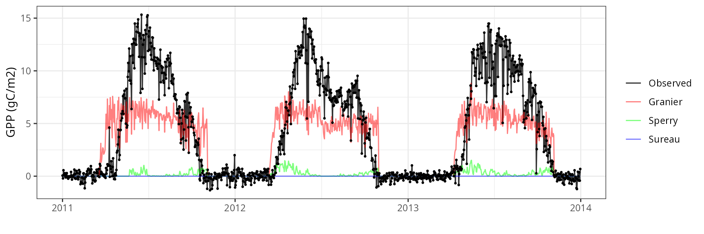

Model evaluation in experimental plots
Miquel De Cáceres (CREAF), Víctor Granda (CREAF), Rafael Poyatos (CREAF), Teresa Gimeno (CREAF), Nicolas Martin-StPaul (INRAE), Antoine Cabon (WSL), Vincenzo Saponaro (U. Tuscia)
2024-05-12
Source:vignettes/evaluation/StandLevelEvaluation.Rmd
StandLevelEvaluation.RmdIntroduction
This document presents medfate (ver. 4.2.0) model evaluation results at stand-level, using data from a set of 21 experimental forest plots. The main source of observed data are SAPFLUXNET database (Poyatos et al. 2021) and FLUXNET 2015 dataset (Pastorello et al. 2020).
List of sites
The table below lists the experimental forest plots used in the report and the data sources available.
| Country | Plot | Stand | SAPFLUXNET | FLUXNET/ICOS |
|---|---|---|---|---|
| Australia | Wombat | Mixed eucalyptus forest | AUS_WOM | AU-Wom |
| Australia | Euc-FACE | Eucalyptus trees in ambient (control) plots of a CO2 enrichment experiment | AUS_RIC_EUC_ELE | AU-Cum |
| Denmark | Soroe | European beech forest | DK-Sor | |
| France | Puéchabon | Dense evergreen forest dominated by Q. ilex | FRA_PUE | FR-Pue |
| France | Hesse | Naturally regenerated, managed beech forest | FRA_HES_HE2_NON | FR-Hes |
| France | Fontainebleau-Barbeau | Mixed deciduous forest | FRA_FON | FR-Fon |
| France | Font-Blanche | Mixed forest with P. halepensis and Q. ilex | FR-Fbn | |
| Israel | Yatir | Pinus halepensis managed plantation | ISR_YAT_YAT | IL-Yat |
| Italy | Collelongo | European beech forest | IT-Col | |
| Portugal | Mitra II | Evergreen forest dominated by Quercus ilex subsp. rotundifolia | PRT_MIT | PT-Mi1 |
| Spain | Rinconada | Young, homogeneous, Quercus pyrenaica regrowth forest | ESP_RIN | |
| Spain | Vallcebre (Cal Barrol) | Semi-deciduous sub-Mediterranean oak forest | ESP_VAL_BAR | |
| Spain | Vallcebre (Cal Sort) | Pinus sylvestris forest in a terraced area | ESP_VAL_SOR | |
| Spain | Prades (Tillar valley) | Mixed forest with P. sylvestris (overstory) Q. ilex (midstory) | ESP_TIL_MIX | |
| Spain | Can Balasc | Mixed forest dominated by Q. ilex | ESP_CAN | |
| Spain | Alto Tajo (Armallones) | Sparse mixed forest dominated by three species | ESP_ALT_ARM | |
| Spain | Ronda (Pilones) | Mixed gimnosperm forest dominated by Abies pinsapo | ESP_RON_PIL | |
| Switzerland | Davos Seehornwald | Subalpine coniferous (spruce) forest | CHE_DAV_SEE | CH-Dav |
| Switzerland | Lötschental | Mixed evergreen Norway spruce and deciduous European larch forest | CHE_LOT_NOR | |
| USA | Morgan-Mornoe | Mixed temperate forest | USA_MOR_SF | US-MMS |
| USA | Sevilleta | Mixed pine-juniper forest | USA_PJS_P04_AMB |
Parametrization and simulations
Forest water balance simulations (i.e. function spwb())
have been conducted using the three transpiration modes
(i.e. Granier, Sperry or
Sureau).
The set of control parameters modified from defaults in simulations are the following:
| transpirationMode | stemCavitationRecovery | leafCavitationRecovery | segmentedXylemVulnerability | subdailyResults |
|---|---|---|---|---|
| Granier | rate | total | NA | NA |
| Sperry | rate | total | TRUE | FALSE |
| Sureau | rate | rate | FALSE | FALSE |
Soil characteristics have been tuned to modulate total available water and fit observed saturation and residual moisture values, but calibration exercises have not been conducted. When available, however, local leaf area to sapwood area ratios have been used. Thus, the evaluation exercise is meant to be more or less representative of simulations with default species-level trait data.
Evaluation variables
The table below lists the set of predicted variables that are evaluated and the data sources used:
| Variable | Level | Observation source | Units |
|---|---|---|---|
| Sensible heat turbulent flux | Stand | FLUXNET / ICOS | MJ/m2 |
| Latent heat turbulent flux | Stand | FLUXNET / ICOS | MJ/m2 |
| Gross primary productivity | Stand | FLUXNET / ICOS | gC/m2 |
| Soil moisture content (topsoil) | Stand | SAPFLUXNET / FLUXNET / ICOS | % vol. |
| Transpiration per leaf area | Plant | SAPFLUXNET | l/m2 |
| Predawn/midday leaf water potential | Plant | SAPFLUXNET (addition) | MPa |
Structure of site reports
The following contains as many sections as forest stands included in the evaluation. The following sub-sections are reported for each stand:
- General information: General information about the site, topography, soil and climate, as well as data sources used.
- Model inputs: Description of model inputs (vegetation, soil, custom species parameters and parameterization remarks).
- Climate: Graphical description of climate inputs and predicted soil/canopy temperatures (under Sperry).
- Evaluation results: Evaluation results are presented for variables with available measurements.
Wombat
General information
| Attribute | Value |
|---|---|
| Plot name | Wombat |
| Country | Australia |
| SAPFLUXNET code | AUS_WOM |
| SAPFLUXNET contributor (affiliation) | Anne Griebel (U. of Melbourne) |
| FLUXNET/ICOS code | AU-Wom |
| FLUXNET/ICOS contributor (affiliation) | Stefan Arndt (U. of Melbourne) |
| Latitude (º) | -37.4222 |
| Longitude (º) | 144.0944 |
| Elevation (m) | 705 |
| Slope (º) | 0 |
| Aspect (º) | 0 |
| Parent material | |
| Soil texture | Loam |
| MAT (ºC) | 10.9 |
| MAP (mm) | 1024 |
| Forest stand | Mixed eucalyptus forest |
| Stand LAI | 2.2 |
| Stand description DOI | 10.1016/j.foreco.2016.12.017 |
| Species simulated | Eucalyptus obliqua, E. radiata, E. rubida |
| Species parameter table | SpParamsAU |
| Simulation period | 2013-2015 |
| Evaluation period | 2013-2015 |
Model inputs
Vegetation
| Species | DBH | Height | N | Z50 | Z95 | LAI |
|---|---|---|---|---|---|---|
| Eucalyptus obliqua | 23 | 2200 | 712.60 | 300 | 1000 | 1.540 |
| Eucalyptus rubida | 23 | 2200 | 213.78 | 300 | 1000 | 0.462 |
| Eucalyptus radiata | 23 | 2200 | 91.62 | 300 | 1000 | 0.198 |
Soil
| widths | clay | sand | om | bd | rfc |
|---|---|---|---|---|---|
| 100 | 24.30 | 55.13333 | 8.340 | 0.9866667 | 13.60 |
| 200 | 25.00 | 50.00000 | 6.000 | 1.1000000 | 14.00 |
| 700 | 35.25 | 44.60000 | 4.465 | 1.2100000 | 14.35 |
| 1000 | 33.10 | 45.90000 | 4.160 | 1.2800000 | 50.00 |
| 2000 | 33.10 | 45.90000 | 0.000 | 1.3500000 | 90.00 |

Evaluation results
Sensible heat turbulent flux
| Site | Mode | n | Bias | Bias.rel | MAE | MAE.rel | r | NSE | NSE.abs |
|---|---|---|---|---|---|---|---|---|---|
| WOMBAT | sperry | 730 | 2.318081 | 67.08080 | 4.978946 | 144.0811 | 0.5507175 | -0.9955180 | -0.2161023 |
| WOMBAT | sureau | 730 | 1.880796 | 54.42662 | 4.900859 | 141.8214 | 0.5293639 | -0.8638345 | -0.1970294 |


Latent heat turbulent flux
| Site | Mode | n | Bias | Bias.rel | MAE | MAE.rel | r | NSE | NSE.abs |
|---|---|---|---|---|---|---|---|---|---|
| WOMBAT | sperry | 730 | -2.872980 | -49.83237 | 3.139356 | 54.45271 | 0.6040179 | -0.5158292 | -0.2527902 |
| WOMBAT | sureau | 730 | -2.402754 | -41.67621 | 2.685645 | 46.58300 | 0.7385456 | -0.0584168 | -0.0717323 |


Gross primary productivity
| Site | Mode | n | Bias | Bias.rel | MAE | MAE.rel | r | NSE | NSE.abs |
|---|---|---|---|---|---|---|---|---|---|
| WOMBAT | granier | 730 | -1.9059796 | -34.562011 | 2.035795 | 36.91602 | 0.7970698 | 0.0460284 | 0.0268402 |
| WOMBAT | sperry | 730 | -0.6087811 | -11.039310 | 1.485756 | 26.94190 | 0.6938025 | 0.4227953 | 0.2897726 |
| WOMBAT | sureau | 730 | -0.5456827 | -9.895118 | 1.323206 | 23.99430 | 0.7707978 | 0.5378239 | 0.3674755 |


Soil water content (SWC.1)
| Site | Mode | n | Bias | Bias.rel | MAE | MAE.rel | r | NSE | NSE.abs |
|---|---|---|---|---|---|---|---|---|---|
| WOMBAT | granier | 1035 | 0.0552767 | 26.31622 | 0.0620686 | 29.54972 | 0.6539993 | -0.4520148 | -0.2123469 |
| WOMBAT | sperry | 1035 | 0.0376030 | 17.90211 | 0.0485959 | 23.13562 | 0.6321571 | 0.0357026 | 0.0508069 |
| WOMBAT | sureau | 1035 | 0.0237324 | 11.29858 | 0.0415013 | 19.75803 | 0.6603207 | 0.2975815 | 0.1893805 |


Transpiration per leaf area
| Site | Cohort | Mode | n | Bias | Bias.rel | MAE | MAE.rel | r | NSE | NSE.abs |
|---|---|---|---|---|---|---|---|---|---|---|
| WOMBAT | T1_7420 | granier | 1035 | -0.0906747 | -22.247869 | 0.1102195 | 27.04336 | 0.9199656 | 0.7171219 | 0.4844124 |
| WOMBAT | T1_7420 | sperry | 1035 | -0.1084004 | -26.597032 | 0.1224187 | 30.03655 | 0.9314223 | 0.6753278 | 0.4273466 |
| WOMBAT | T1_7420 | sureau | 1035 | -0.0339859 | -8.338755 | 0.1474293 | 36.17313 | 0.9115968 | 0.3834328 | 0.3103513 |
| WOMBAT | T2_7515 | granier | 1035 | -0.0333545 | -7.370473 | 0.1007398 | 22.26086 | 0.9249555 | 0.8449698 | 0.6362446 |
| WOMBAT | T2_7515 | sperry | 1035 | -0.1372637 | -30.331691 | 0.1430309 | 31.60608 | 0.9448572 | 0.7094718 | 0.4835382 |
| WOMBAT | T2_7515 | sureau | 1035 | -0.0306520 | -6.773293 | 0.1398946 | 30.91304 | 0.9315201 | 0.6502410 | 0.4948630 |


Euc-FACE
General information
| Attribute | Value |
|---|---|
| Plot name | Euc-FACE |
| Country | Australia |
| SAPFLUXNET code | AUS_RIC_EUC_ELE |
| SAPFLUXNET contributor (affiliation) | Teresa Gimeno (CREAF) |
| FLUXNET/ICOS code | AU-Cum |
| FLUXNET/ICOS contributor (affiliation) | Elise Pendall (U. Western Sidney) |
| Latitude (º) | -33.61778 |
| Longitude (º) | 150.74028 |
| Elevation (m) | 23 |
| Slope (º) | 0 |
| Aspect (º) | 0 |
| Parent material | |
| Soil texture | Sandy loam |
| MAT (ºC) | 17.6 |
| MAP (mm) | 899 |
| Forest stand | Eucalyptus trees in ambient (control) plots of a CO2 enrichment experiment |
| Stand LAI | 2 |
| Stand description DOI | 10.1111/1365-2435.12532 |
| Species simulated | Eucalyptus tereticornis |
| Species parameter table | SpParamsAU |
| Simulation period | 2012-2014 |
| Evaluation period | 2012-2014 |
Model inputs
Vegetation
| Species | DBH | Height | N | Z50 | Z95 | LAI | Cover |
|---|---|---|---|---|---|---|---|
| Eucalyptus tereticornis | 21 | 2200 | 800 | 200 | 3000 | 2 | NA |
| Herbaceous layer | NA | 10 | NA | NA | NA | NA | 10 |

Evaluation results
Sensible heat turbulent flux
| Site | Mode | n | Bias | Bias.rel | MAE | MAE.rel | r | NSE | NSE.abs |
|---|---|---|---|---|---|---|---|---|---|
| EUCFACE | sperry | 884 | -2.386731 | -49.40474 | 4.434109 | 91.78495 | 0.2811577 | -1.142325 | -0.4079908 |
| EUCFACE | sureau | 884 | -2.492219 | -51.58831 | 4.467064 | 92.46710 | 0.2306714 | -1.188176 | -0.4184551 |


Latent heat turbulent flux
| Site | Mode | n | Bias | Bias.rel | MAE | MAE.rel | r | NSE | NSE.abs |
|---|---|---|---|---|---|---|---|---|---|
| EUCFACE | sperry | 884 | -2.52750 | -45.34187 | 2.614085 | 46.89515 | 0.5786961 | -1.359446 | -0.7426432 |
| EUCFACE | sureau | 884 | -2.40681 | -43.17676 | 2.604361 | 46.72070 | 0.5243046 | -1.433867 | -0.7361604 |


Gross primary productivity
| Site | Mode | n | Bias | Bias.rel | MAE | MAE.rel | r | NSE | NSE.abs |
|---|---|---|---|---|---|---|---|---|---|
| EUCFACE | granier | 884 | -0.393374 | -12.95232 | 0.9789484 | 32.23306 | 0.2527037 | -0.3400254 | -0.1354995 |
| EUCFACE | sperry | 884 | 2.763555 | 90.99339 | 2.8224594 | 92.93289 | 0.3699486 | -7.4138775 | -2.2738204 |
| EUCFACE | sureau | 884 | 2.200295 | 72.44738 | 2.2774113 | 74.98653 | 0.2693049 | -5.1766307 | -1.6416096 |


Soil water content (SWC)
| Site | Mode | n | Bias | Bias.rel | MAE | MAE.rel | r | NSE | NSE.abs |
|---|---|---|---|---|---|---|---|---|---|
| EUCFACE | granier | 710 | 0.1027746 | 107.79187 | 0.1055783 | 110.73247 | 0.5532691 | -1.8767489 | -0.9323544 |
| EUCFACE | sperry | 710 | 0.0599866 | 62.91505 | 0.0657901 | 69.00181 | 0.7475743 | -0.1796363 | -0.2041269 |
| EUCFACE | sureau | 710 | 0.0623987 | 65.44487 | 0.0678128 | 71.12333 | 0.7109501 | -0.3145408 | -0.2411488 |


Transpiration per leaf area
| Site | Cohort | Mode | n | Bias | Bias.rel | MAE | MAE.rel | r | NSE | NSE.abs |
|---|---|---|---|---|---|---|---|---|---|---|
| EUCFACE | T1_7578 | granier | 708 | -0.2795542 | -43.02156 | 0.2959184 | 45.53990 | 0.7047373 | -0.5173601 | -0.3272657 |
| EUCFACE | T1_7578 | sperry | 708 | -0.1140126 | -17.54580 | 0.1814480 | 27.92366 | 0.7732920 | 0.3383206 | 0.1861616 |
| EUCFACE | T1_7578 | sureau | 708 | -0.0815266 | -12.54641 | 0.2421378 | 37.26341 | 0.6842439 | -0.1596584 | -0.0860466 |


Leaf water potential
| Site | Cohort | WP | Mode | n | Bias | Bias.rel | MAE | MAE.rel | r | NSE | NSE.abs |
|---|---|---|---|---|---|---|---|---|---|---|---|
| EUCFACE | T1_7578 | Midday | sperry | 15 | 0.8471017 | 42.532700 | 0.8970568 | 45.04093 | 0.1815249 | -2.584431 | -0.936393 |
| EUCFACE | T1_7578 | Midday | sureau | 15 | 1.1195853 | 56.214010 | 1.2903167 | 64.78638 | -0.0914894 | -5.594307 | -1.785286 |
| EUCFACE | T1_7578 | Predawn | sperry | 8 | 0.4176057 | 64.894937 | 0.4176057 | 64.89494 | 0.2329954 | -5.507499 | -1.827830 |
| EUCFACE | T1_7578 | Predawn | sureau | 8 | 0.0305319 | 4.744591 | 0.4586835 | 71.27833 | -0.0742229 | -8.235384 | -2.105990 |


Soroe
General information
| Attribute | Value |
|---|---|
| Plot name | Soroe |
| Country | Denmark |
| SAPFLUXNET code | |
| SAPFLUXNET contributor (affiliation) | |
| FLUXNET/ICOS code | DK-Sor |
| FLUXNET/ICOS contributor (affiliation) | Andreas Ibrom (Technical University of Denmark) |
| Latitude (º) | 11.6446 |
| Longitude (º) | 55.4859 |
| Elevation (m) | 40 |
| Slope (º) | 0 |
| Aspect (º) | NA |
| Parent material | |
| Soil texture | |
| MAT (ºC) | 8.2 |
| MAP (mm) | 660 |
| Forest stand | European beech forest |
| Stand LAI | 4.5 |
| Stand description DOI | 10.1016/j.agrformet.2011.02.013 |
| Species simulated | Fagus sylvatica |
| Species parameter table | SpParamsFR |
| Simulation period | 2003-2006 |
| Evaluation period | 2003-2006 |
Model inputs

Evaluation results
Sensible heat turbulent flux
| Site | Mode | n | Bias | Bias.rel | MAE | MAE.rel | r | NSE | NSE.abs |
|---|---|---|---|---|---|---|---|---|---|
| SOROE | sperry | 1461 | -0.2469791 | -158.5196 | 5.655282 | 3629.754 | 0.2291893 | -1.338017 | -0.5979737 |
| SOROE | sureau | 1461 | 0.5197055 | 333.5648 | 5.437794 | 3490.162 | 0.2808759 | -1.225573 | -0.5365195 |


Latent heat turbulent flux
| Site | Mode | n | Bias | Bias.rel | MAE | MAE.rel | r | NSE | NSE.abs |
|---|---|---|---|---|---|---|---|---|---|
| SOROE | sperry | 1461 | 0.0272947 | 0.9441937 | 1.309026 | 45.28253 | 0.8382522 | 0.6270540 | 0.5078267 |
| SOROE | sureau | 1461 | -0.8291556 | -28.6826046 | 1.682912 | 58.21621 | 0.7223964 | 0.4413894 | 0.3672513 |


Gross primary productivity
| Site | Mode | n | Bias | Bias.rel | MAE | MAE.rel | r | NSE | NSE.abs |
|---|---|---|---|---|---|---|---|---|---|
| SOROE | granier | 1461 | -1.0072360 | -18.382119 | 1.622454 | 29.60988 | 0.9214604 | 0.8186910 | 0.6816198 |
| SOROE | sperry | 1461 | 0.4567217 | 8.335199 | 1.900638 | 34.68676 | 0.9282193 | 0.7792847 | 0.6270306 |
| SOROE | sureau | 1461 | -0.3621802 | -6.609811 | 1.527373 | 27.87466 | 0.9266110 | 0.8470070 | 0.7002778 |


Soil water content (SWC)
| Site | Mode | n | Bias | Bias.rel | MAE | MAE.rel | r | NSE | NSE.abs |
|---|---|---|---|---|---|---|---|---|---|
| SOROE | granier | 1461 | 0.0439120 | 19.28826 | 0.0447047 | 19.63645 | 0.8258691 | 0.0323425 | 0.0192692 |
| SOROE | sperry | 1461 | 0.0511169 | 22.45296 | 0.0569677 | 25.02294 | 0.8071277 | -0.6329310 | -0.2497562 |
| SOROE | sureau | 1461 | 0.0725055 | 31.84789 | 0.0732535 | 32.17644 | 0.6645238 | -1.4662327 | -0.6070336 |


Puéchabon
General information
| Attribute | Value |
|---|---|
| Plot name | Puéchabon |
| Country | France |
| SAPFLUXNET code | FRA_PUE |
| SAPFLUXNET contributor (affiliation) | Jean-Marc Limousin (CEFE-CNRS) |
| FLUXNET/ICOS code | FR-Pue |
| FLUXNET/ICOS contributor (affiliation) | Jean-Marc Limousin (CEFE-CNRS) |
| Latitude (º) | 43.74 |
| Longitude (º) | 3.6 |
| Elevation (m) | 270 |
| Slope (º) | 0 |
| Aspect (º) | 0 |
| Parent material | Limestone |
| Soil texture | Silty clay loam |
| MAT (ºC) | 13.4 |
| MAP (mm) | 720 |
| Forest stand | Dense evergreen forest dominated by Q. ilex |
| Stand LAI | 2 |
| Stand description DOI | 10.1111/j.1365-2486.2009.01852.x |
| Species simulated | Quercus ilex, Buxus sempervirens |
| Species parameter table | SpParamsFR |
| Simulation period | 2004-2006 |
| Evaluation period | 2004-2006 |
Model inputs
Vegetation
| Species | DBH | Height | N | Z50 | Z95 | LAI | Cover |
|---|---|---|---|---|---|---|---|
| Quercus ilex | 9.1156 | 530.2222 | 1750 | 529 | 2287 | 2.0 | NA |
| Buxus sempervirens | NA | 200.0000 | NA | 390 | 1470 | 0.2 | 13 |
| Herbaceous layer | NA | 20.0000 | NA | NA | NA | NA | 10 |
Soil
| widths | clay | sand | om | bd | rfc | VG_theta_sat | VG_theta_res |
|---|---|---|---|---|---|---|---|
| 100 | 39 | 26 | 6 | 1.45 | 75 | 0.27 | 0.015 |
| 200 | 39 | 26 | 4 | 1.45 | 75 | 0.27 | 0.015 |
| 200 | 39 | 26 | 3 | 1.45 | 75 | 0.27 | 0.015 |
| 1500 | 39 | 26 | 1 | 1.45 | 80 | 0.27 | 0.015 |
| 2500 | 39 | 26 | 1 | 1.45 | 90 | 0.27 | 0.015 |
Custom traits
| Species | SLA | VCleaf_P12 | VCleaf_P50 | VCleaf_P88 | VCleaf_slope | VCstem_P12 | VCstem_P50 | VCstem_P88 | VCstem_slope | VCroot_P12 | VCroot_P50 | VCroot_P88 | VCroot_slope | VCleaf_kmax | Kmax_stemxylem | LeafEPS | LeafPI0 | LeafAF | StemEPS | StemPI0 | StemAF | Gswmin | Gswmax | Gs_P50 | Gs_slope | Al2As |
|---|---|---|---|---|---|---|---|---|---|---|---|---|---|---|---|---|---|---|---|---|---|---|---|---|---|---|
| Quercus ilex | 4.55 | -4.004731 | -5.25 | -6.495269 | 40 | -4.739642 | -6.4 | -8.060358 | 30 | -2.004731 | -3.25 | -4.495269 | 40 | 2.63 | 0.20 | 15 | -2.5 | 0.4 | 15 | -2.5 | 0.4 | 0.002 | 0.20 | -2.114188 | 44.70588 | 1540.671 |
| Buxus sempervirens | 5.19 | -5.004731 | -6.25 | -7.495269 | 40 | NA | NA | NA | NA | NA | NA | NA | NA | 2.00 | 0.15 | NA | NA | NA | NA | NA | NA | 0.002 | 0.18 | NA | NA | NA |

Evaluation results
Sensible heat turbulent flux
| Site | Mode | n | Bias | Bias.rel | MAE | MAE.rel | r | NSE | NSE.abs |
|---|---|---|---|---|---|---|---|---|---|
| FRAPUE | sperry | 1096 | 0.0552252 | 1.560094 | 3.988298 | 112.6682 | 0.6863600 | 0.0155227 | 0.1215444 |
| FRAPUE | sureau | 1096 | 0.1520631 | 4.295739 | 3.796011 | 107.2362 | 0.6482091 | 0.1286368 | 0.1638971 |


Latent heat turbulent flux
| Site | Mode | n | Bias | Bias.rel | MAE | MAE.rel | r | NSE | NSE.abs |
|---|---|---|---|---|---|---|---|---|---|
| FRAPUE | sperry | 1096 | 0.0630732 | 1.982530 | 1.928243 | 60.60897 | 0.4687390 | -0.2090532 | -0.0106963 |
| FRAPUE | sureau | 1096 | -0.1132130 | -3.558537 | 1.491759 | 46.88933 | 0.5889192 | 0.2816147 | 0.2180882 |


Gross primary productivity
| Site | Mode | n | Bias | Bias.rel | MAE | MAE.rel | r | NSE | NSE.abs |
|---|---|---|---|---|---|---|---|---|---|
| FRAPUE | granier | 1096 | 0.5885208 | 17.839202 | 1.165275 | 35.32173 | 0.7487814 | 0.3746191 | 0.2591518 |
| FRAPUE | sperry | 1096 | -0.9000213 | -27.281383 | 1.290172 | 39.10759 | 0.6071729 | 0.0455335 | 0.1797460 |
| FRAPUE | sureau | 1096 | -0.2706965 | -8.205335 | 1.131971 | 34.31222 | 0.6734823 | 0.4208533 | 0.2803256 |


Soil water content (SWC.2)
| Site | Mode | n | Bias | Bias.rel | MAE | MAE.rel | r | NSE | NSE.abs |
|---|---|---|---|---|---|---|---|---|---|
| FRAPUE | granier | 1021 | 0.0359974 | 22.598487 | 0.0391426 | 24.57301 | 0.8035373 | -0.2264352 | -0.0204683 |
| FRAPUE | sperry | 1021 | -0.0068794 | -4.318769 | 0.0352765 | 22.14595 | 0.8724144 | 0.1070444 | 0.0803226 |
| FRAPUE | sureau | 1021 | 0.0218330 | 13.706341 | 0.0353403 | 22.18595 | 0.8369895 | -0.0369458 | 0.0786614 |


Transpiration per leaf area
| Site | Cohort | Mode | n | Bias | Bias.rel | MAE | MAE.rel | r | NSE | NSE.abs |
|---|---|---|---|---|---|---|---|---|---|---|
| FRAPUE | T1_2854 | granier | 1096 | -0.0218888 | -6.380995 | 0.1047255 | 30.52950 | 0.8111814 | 0.6039736 | 0.4214506 |
| FRAPUE | T1_2854 | sperry | 1096 | 0.0802933 | 23.407054 | 0.2859704 | 83.36587 | 0.5384965 | -2.5826741 | -0.5798255 |
| FRAPUE | T1_2854 | sureau | 1096 | 0.0404653 | 11.796406 | 0.1876634 | 54.70751 | 0.7399006 | -0.3915576 | -0.0367350 |


Leaf water potential
| Site | Cohort | WP | Mode | n | Bias | Bias.rel | MAE | MAE.rel | r | NSE | NSE.abs |
|---|---|---|---|---|---|---|---|---|---|---|---|
| FRAPUE | T1_2854 | Midday | sperry | 24 | -0.9938216 | -31.67822 | 1.149721 | 36.64753 | 0.7472797 | -2.0553651 | -0.8389150 |
| FRAPUE | T1_2854 | Midday | sureau | 28 | 1.3723141 | 43.98128 | 1.372314 | 43.98128 | 0.7009674 | -3.1305678 | -1.2986491 |
| FRAPUE | T1_2854 | Predawn | sperry | 24 | -1.6004868 | -103.14746 | 1.623793 | 104.64946 | 0.8281331 | -1.6129447 | -0.5643488 |
| FRAPUE | T1_2854 | Predawn | sureau | 28 | 0.3313607 | 22.65368 | 0.565937 | 38.69064 | 0.7978133 | 0.5514678 | 0.4048295 |


Hesse
General information
| Attribute | Value |
|---|---|
| Plot name | Hesse |
| Country | France |
| SAPFLUXNET code | FRA_HES_HE2_NON |
| SAPFLUXNET contributor (affiliation) | André Granier (INRAE) |
| FLUXNET/ICOS code | FR-Hes |
| FLUXNET/ICOS contributor (affiliation) | Matthias Cuntz (INRAE) |
| Latitude (º) | 48.6742 |
| Longitude (º) | 7.0647 |
| Elevation (m) | 300 |
| Slope (º) | 0 |
| Aspect (º) | 0 |
| Parent material | |
| Soil texture | Silt loam |
| MAT (ºC) | 10 |
| MAP (mm) | 1003 |
| Forest stand | Naturally regenerated, managed beech forest |
| Stand LAI | 7 |
| Stand description DOI | 10.1051/forest:2008052 |
| Species simulated | Fagus sylvatica |
| Species parameter table | SpParamsFR |
| Simulation period | 2001-2003 |
| Evaluation period | 2001-2003 |
Model inputs
Vegetation
| Species | DBH | Height | N | Z50 | Z95 | LAI | Cover |
|---|---|---|---|---|---|---|---|
| Fagus sylvatica | 12.91 | 1300 | 3203 | 300 | 1200 | 7 | NA |
| Herbaceous layer | NA | 20 | NA | NA | NA | NA | 5 |

Evaluation results
Sensible heat turbulent flux
| Site | Mode | n | Bias | Bias.rel | MAE | MAE.rel | r | NSE | NSE.abs |
|---|---|---|---|---|---|---|---|---|---|
| FRAHES | sperry | 1070 | -3.266987 | -222.523 | 6.514702 | 443.7334 | 0.1407435 | -3.154743 | -1.425683 |
| FRAHES | sureau | 1070 | -3.246050 | -221.097 | 6.403309 | 436.1462 | 0.1543330 | -3.018046 | -1.384207 |


Latent heat turbulent flux
| Site | Mode | n | Bias | Bias.rel | MAE | MAE.rel | r | NSE | NSE.abs |
|---|---|---|---|---|---|---|---|---|---|
| FRAHES | sperry | 1064 | 2.773071 | 117.2695 | 3.235927 | 136.8431 | 0.7973610 | -1.77125 | -0.4292125 |
| FRAHES | sureau | 1064 | 2.764493 | 116.9068 | 3.246995 | 137.3112 | 0.6890641 | -2.09352 | -0.4341007 |


Soil water content (SWC.1)
| Site | Mode | n | Bias | Bias.rel | MAE | MAE.rel | r | NSE | NSE.abs |
|---|---|---|---|---|---|---|---|---|---|
| FRAHES | granier | 43 | 0.0066384 | 2.044301 | 0.0289958 | 8.929303 | 0.8539233 | 0.7190115 | 0.4995808 |
| FRAHES | sperry | 43 | 0.0687519 | 21.172288 | 0.0842940 | 25.958520 | 0.3404071 | -1.8760602 | -0.4547767 |
| FRAHES | sureau | 43 | -0.0066395 | -2.044638 | 0.0302728 | 9.322580 | 0.8836465 | 0.6580522 | 0.4775406 |


Soil water content (SWC.2)
| Site | Mode | n | Bias | Bias.rel | MAE | MAE.rel | r | NSE | NSE.abs |
|---|---|---|---|---|---|---|---|---|---|
| FRAHES | granier | 43 | 0.0187179 | 5.462707 | 0.0259642 | 7.577508 | 0.9339692 | 0.7704321 | 0.5206939 |
| FRAHES | sperry | 43 | 0.0470545 | 13.732600 | 0.0598739 | 17.473885 | 0.5067500 | -0.8163724 | -0.1052893 |
| FRAHES | sureau | 43 | -0.0114708 | -3.347702 | 0.0322306 | 9.406346 | 0.9593137 | 0.6388435 | 0.4050130 |


Soil water content (SWC.3)
| Site | Mode | n | Bias | Bias.rel | MAE | MAE.rel | r | NSE | NSE.abs |
|---|---|---|---|---|---|---|---|---|---|
| FRAHES | granier | 43 | 0.0063647 | 1.898897 | 0.0149338 | 4.455493 | 0.9177103 | 0.7231832 | 0.4738438 |
| FRAHES | sperry | 43 | 0.0162194 | 4.839048 | 0.0415025 | 12.382254 | 0.4903527 | -1.5672683 | -0.4622398 |
| FRAHES | sureau | 43 | -0.0306679 | -9.149764 | 0.0428849 | 12.794695 | 0.9419917 | -1.5677381 | -0.5109456 |


Soil water content (SWC.4)
| Site | Mode | n | Bias | Bias.rel | MAE | MAE.rel | r | NSE | NSE.abs |
|---|---|---|---|---|---|---|---|---|---|
| FRAHES | granier | 43 | -0.0117941 | -3.6395244 | 0.0261103 | 8.057357 | 0.8425083 | -4.798843 | -1.633321 |
| FRAHES | sperry | 43 | -0.0000826 | -0.0255003 | 0.0363450 | 11.215688 | 0.4388673 | -14.670648 | -2.665532 |
| FRAHES | sureau | 43 | -0.0451031 | -13.9183326 | 0.0572739 | 17.674109 | 0.8802165 | -33.678305 | -4.776286 |


Soil water content (SWC.5)
| Site | Mode | n | Bias | Bias.rel | MAE | MAE.rel | r | NSE | NSE.abs |
|---|---|---|---|---|---|---|---|---|---|
| FRAHES | granier | 43 | -0.0013824 | -0.4672915 | 0.0044644 | 1.509028 | 0.3761508 | -3.108864 | -0.8692214 |
| FRAHES | sperry | 43 | 0.0012674 | 0.4283927 | 0.0045771 | 1.547147 | 0.1456132 | -2.803028 | -0.9164397 |
| FRAHES | sureau | 43 | -0.0021913 | -0.7407125 | 0.0043720 | 1.477826 | 0.4846441 | -2.471906 | -0.8305724 |


Transpiration per leaf area
| Site | Cohort | Mode | n | Bias | Bias.rel | MAE | MAE.rel | r | NSE | NSE.abs |
|---|---|---|---|---|---|---|---|---|---|---|
| FRAHES | T1_1396 | granier | 559 | -0.1785159 | -35.28564 | 0.2549046 | 50.38473 | 0.7514316 | 0.2208457 | 0.2148898 |
| FRAHES | T1_1396 | sperry | 559 | -0.1150523 | -22.74137 | 0.1839752 | 36.36473 | 0.8100174 | 0.5648913 | 0.4333537 |
| FRAHES | T1_1396 | sureau | 559 | -0.1144293 | -22.61821 | 0.2147064 | 42.43910 | 0.7303336 | 0.4260038 | 0.3387010 |


Fontainebleau-Barbeau
General information
| Attribute | Value |
|---|---|
| Plot name | Fontainebleau-Barbeau |
| Country | France |
| SAPFLUXNET code | FRA_FON |
| SAPFLUXNET contributor (affiliation) | Nicolas Delpierre (Univ. Paris-Sud) |
| FLUXNET/ICOS code | FR-Fon |
| FLUXNET/ICOS contributor (affiliation) | Nicolas Delpierre (Univ. Paris-Sud) |
| Latitude (º) | 48.47634 |
| Longitude (º) | 2.78014 |
| Elevation (m) | 105 |
| Slope (º) | 0 |
| Aspect (º) | 0 |
| Parent material | Millstone |
| Soil texture | Loam |
| MAT (ºC) | 11.2 |
| MAP (mm) | 697 |
| Forest stand | Mixed deciduous forest |
| Stand LAI | 6 |
| Stand description DOI | 10.1111/nph.13771 |
| Species simulated | Quercus petraea, Carpinus betulus |
| Species parameter table | SpParamsFR |
| Simulation period | 2006-2008 |
| Evaluation period | 2006-2008 |
Model inputs
Vegetation
| Species | DBH | Height | N | Z50 | Z95 | LAI |
|---|---|---|---|---|---|---|
| Quercus petraea | 33 | 2800 | 220.8 | NA | NA | 4.74 |
| Carpinus betulus | 10 | 500 | 883.2 | NA | NA | 1.26 |

Evaluation results
Sensible heat turbulent flux
| Site | Mode | n | Bias | Bias.rel | MAE | MAE.rel | r | NSE | NSE.abs |
|---|---|---|---|---|---|---|---|---|---|
| FONTAINEBLEAU | sperry | 842 | -2.144930 | -162.0756 | 5.322136 | 402.1522 | 0.2646061 | -4.966238 | -1.503418 |
| FONTAINEBLEAU | sureau | 842 | -1.717943 | -129.8115 | 5.110480 | 386.1590 | 0.2769880 | -4.562737 | -1.403860 |


Latent heat turbulent flux
| Site | Mode | n | Bias | Bias.rel | MAE | MAE.rel | r | NSE | NSE.abs |
|---|---|---|---|---|---|---|---|---|---|
| FONTAINEBLEAU | sperry | 842 | -0.0280153 | -0.5775693 | 1.327329 | 27.36448 | 0.8746622 | 0.6946777 | 0.5199928 |
| FONTAINEBLEAU | sureau | 842 | -0.5157279 | -10.6323470 | 1.697026 | 34.98621 | 0.8063653 | 0.5309110 | 0.3862981 |


Gross primary productivity
| Site | Mode | n | Bias | Bias.rel | MAE | MAE.rel | r | NSE | NSE.abs |
|---|---|---|---|---|---|---|---|---|---|
| FONTAINEBLEAU | granier | 842 | -1.7718129 | -28.039228 | 2.176344 | 34.44101 | 0.9314132 | 0.6480908 | 0.5036165 |
| FONTAINEBLEAU | sperry | 842 | -0.2208927 | -3.495662 | 1.410557 | 22.32230 | 0.9259437 | 0.8551037 | 0.6782782 |
| FONTAINEBLEAU | sureau | 842 | -0.5031236 | -7.962013 | 1.520485 | 24.06192 | 0.9248197 | 0.8360851 | 0.6532059 |


Transpiration per leaf area
| Site | Cohort | Mode | n | Bias | Bias.rel | MAE | MAE.rel | r | NSE | NSE.abs |
|---|---|---|---|---|---|---|---|---|---|---|
| FONTAINEBLEAU | T1_2856 | granier | 740 | -0.2294913 | -47.480136 | 0.2334268 | 48.29436 | 0.8661692 | 0.1710985 | 0.1744748 |
| FONTAINEBLEAU | T1_2856 | sperry | 740 | -0.1955008 | -40.447735 | 0.2175958 | 45.01904 | 0.7671547 | 0.2140449 | 0.2304619 |
| FONTAINEBLEAU | T1_2856 | sureau | 740 | -0.2355325 | -48.730006 | 0.2563045 | 53.02759 | 0.7150124 | -0.0208617 | 0.0935668 |
| FONTAINEBLEAU | T2_730 | granier | 732 | 0.0043359 | 2.711251 | 0.0453896 | 28.38237 | 0.8458204 | 0.7031860 | 0.5161341 |
| FONTAINEBLEAU | T2_730 | sperry | 732 | -0.0167810 | -10.493244 | 0.0770748 | 48.19530 | 0.7183137 | 0.0562204 | 0.1783613 |
| FONTAINEBLEAU | T2_730 | sureau | 732 | -0.0495233 | -30.967183 | 0.0785367 | 49.10941 | 0.6716791 | 0.1432316 | 0.1627773 |


Font-Blanche
General information
| Attribute | Value |
|---|---|
| Plot name | Font-Blanche |
| Country | France |
| SAPFLUXNET code | |
| SAPFLUXNET contributor (affiliation) | |
| FLUXNET/ICOS code | FR-Fbn |
| FLUXNET/ICOS contributor (affiliation) | Nicolas Martin-StPaul (INRAE) |
| Latitude (º) | 43.24 |
| Longitude (º) | 5.68 |
| Elevation (m) | 420 |
| Slope (º) | 0 |
| Aspect (º) | 0 |
| Parent material | Cretaceous limestone |
| Soil texture | Clay loam |
| MAT (ºC) | 13.5 |
| MAP (mm) | 722 |
| Forest stand | Mixed forest with P. halepensis and Q. ilex |
| Stand LAI | 2 |
| Stand description DOI | 10.1016/j.agrformet.2021.108472 |
| Species simulated | Quercus ilex, Pinus halepensis, Phillyrea latifolia |
| Species parameter table | SpParamsFR |
| Simulation period | 2014-2018 |
| Evaluation period | 2014-2018 |
Model inputs
Vegetation
| Species | DBH | Height | N | Z50 | Z95 | LAI | Cover |
|---|---|---|---|---|---|---|---|
| Phillyrea latifolia | 2.587859 | 323.0000 | 1248 | 390 | 1470 | 0.0000000 | NA |
| Pinus halepensis | 26.759914 | 1195.7667 | 256 | 300 | 1200 | 0.9843761 | NA |
| Quercus ilex | 6.220031 | 495.5532 | 3104 | 500 | 2287 | 1.7156239 | NA |
| Herbaceous layer | NA | 10.0000 | NA | NA | NA | NA | 5 |
Soil
| widths | clay | sand | om | bd | rfc |
|---|---|---|---|---|---|
| 300 | 39 | 26 | 6 | 1.45 | 50 |
| 700 | 39 | 26 | 3 | 1.45 | 65 |
| 1000 | 39 | 26 | 1 | 1.45 | 90 |
| 2500 | 39 | 26 | 1 | 1.45 | 95 |
Custom traits
| Species | VCstem_P12 | VCstem_P50 | VCstem_P88 | VCstem_slope | VCroot_P12 | VCroot_P50 | VCroot_P88 | VCleaf_kmax | LeafEPS | LeafPI0 | LeafAF | StemEPS | StemPI0 | StemAF | Gswmin | Gswmax | Gs_P50 | Gs_slope | Al2As |
|---|---|---|---|---|---|---|---|---|---|---|---|---|---|---|---|---|---|---|---|
| Phillyrea latifolia | -1.971750 | -6.50 | -11.028250 | 11 | NA | NA | NA | 3.00 | 12.38 | -2.13 | 0.5 | 12.38 | -2.13 | 0.4 | 0.002 | 0.2200 | -2.207094 | 89.41176 | NA |
| Pinus halepensis | -3.707158 | -4.79 | -5.872842 | 46 | -1 | -1.741565 | -2.301482 | 4.00 | 5.31 | -1.50 | 0.6 | 5.00 | -1.65 | 0.4 | 0.001 | 0.2175 | -1.871216 | 97.43590 | 631.000 |
| Quercus ilex | -4.739642 | -6.40 | -8.060358 | 30 | NA | NA | NA | 2.63 | 15.00 | -2.50 | 0.4 | 15.00 | -2.50 | 0.4 | 0.002 | 0.2200 | -2.114188 | 44.70588 | 1540.671 |

Evaluation results
Sensible heat turbulent flux
| Site | Mode | n | Bias | Bias.rel | MAE | MAE.rel | r | NSE | NSE.abs |
|---|---|---|---|---|---|---|---|---|---|
| FONBLA | sperry | 1004 | -1.038340 | -21.18218 | 4.147677 | 84.61280 | 0.6647428 | 0.0121136 | 0.1035833 |
| FONBLA | sureau | 1004 | -1.179834 | -24.06867 | 4.139218 | 84.44023 | 0.6584504 | 0.0054291 | 0.1054115 |


Latent heat turbulent flux
| Site | Mode | n | Bias | Bias.rel | MAE | MAE.rel | r | NSE | NSE.abs |
|---|---|---|---|---|---|---|---|---|---|
| FONBLA | sperry | 1026 | -0.2967406 | -10.120696 | 1.647376 | 56.18577 | 0.3489761 | -0.2787647 | -0.0891137 |
| FONBLA | sureau | 1026 | -0.0852246 | -2.906688 | 1.630301 | 55.60338 | 0.4818594 | -0.2940656 | -0.0778247 |


Soil water content (SWC)
| Site | Mode | n | Bias | Bias.rel | MAE | MAE.rel | r | NSE | NSE.abs |
|---|---|---|---|---|---|---|---|---|---|
| FONBLA | granier | 1760 | -0.1159308 | -26.01255 | 0.1196357 | 26.84386 | 0.8795067 | 0.0094788 | 0.0639918 |
| FONBLA | sperry | 1760 | -0.1070422 | -24.01811 | 0.1150944 | 25.82488 | 0.8744784 | 0.0771937 | 0.0995222 |
| FONBLA | sureau | 1760 | -0.1406404 | -31.55689 | 0.1410797 | 31.65545 | 0.9223761 | -0.1604001 | -0.1037817 |


Transpiration per leaf area
| Site | Cohort | Mode | n | Bias | Bias.rel | MAE | MAE.rel | r | NSE | NSE.abs |
|---|---|---|---|---|---|---|---|---|---|---|
| FONBLA | T2_2630 | granier | 300 | 0.2311157 | 112.371178 | 0.2446234 | 118.93880 | 0.3696488 | -7.7827595 | -1.4720453 |
| FONBLA | T2_2630 | sperry | 300 | -0.2056716 | -100.000000 | 0.2056716 | 100.00000 | NA | -3.2144409 | -1.0784178 |
| FONBLA | T2_2630 | sureau | 300 | 0.2068925 | 100.593596 | 0.2582763 | 125.57702 | 0.3203163 | -12.2652540 | -1.6100152 |
| FONBLA | T3_2854 | granier | 309 | 0.0155005 | 5.354985 | 0.0747459 | 25.82265 | 0.8449624 | 0.6804243 | 0.4907719 |
| FONBLA | T3_2854 | sperry | 309 | 0.2072809 | 71.609846 | 0.2318606 | 80.10145 | 0.7793941 | -2.2238392 | -0.5796172 |
| FONBLA | T3_2854 | sureau | 309 | 0.0576924 | 19.931142 | 0.1171423 | 40.46945 | 0.8406331 | 0.0760785 | 0.2019341 |


Leaf water potential
| Site | Cohort | WP | Mode | n | Bias | Bias.rel | MAE | MAE.rel | r | NSE | NSE.abs |
|---|---|---|---|---|---|---|---|---|---|---|---|
| FONBLA | T2_2630 | Midday | sperry | 3 | 2.4635330 | 92.34401 | 2.4635330 | 92.34401 | 0.9487302 | -118.0694298 | -12.1713645 |
| FONBLA | T2_2630 | Midday | sureau | 3 | 0.9142174 | 34.26887 | 0.9142174 | 34.26887 | 0.9909704 | -16.8763812 | -3.8878949 |
| FONBLA | T2_2630 | Predawn | sperry | 3 | 1.7407552 | 89.49898 | 1.7407552 | 89.49898 | 0.9350722 | -15.7784758 | -3.8958740 |
| FONBLA | T2_2630 | Predawn | sureau | 3 | 0.6824808 | 35.08899 | 0.6824808 | 35.08899 | 0.9710178 | -2.1286032 | -0.9194772 |
| FONBLA | T3_2854 | Midday | sperry | 3 | 1.5968120 | 58.51510 | 1.5968120 | 58.51510 | 0.3550913 | -16.9337938 | -3.9329431 |
| FONBLA | T3_2854 | Midday | sureau | 3 | 1.2128900 | 44.44629 | 1.2128900 | 44.44629 | 0.9713465 | -9.6168404 | -2.7469141 |
| FONBLA | T3_2854 | Predawn | sperry | 3 | 1.3065156 | 86.08082 | 1.3065156 | 86.08082 | 0.9589528 | -5.8516917 | -1.9519599 |
| FONBLA | T3_2854 | Predawn | sureau | 3 | 0.3606120 | 23.75921 | 0.3754029 | 24.73372 | 0.9855809 | 0.2527793 | 0.1518094 |


Yatir
General information
| Attribute | Value |
|---|---|
| Plot name | Yatir |
| Country | Israel |
| SAPFLUXNET code | ISR_YAT_YAT |
| SAPFLUXNET contributor (affiliation) | Fyodor Tatarinov (Weizmann Institute of Science) |
| FLUXNET/ICOS code | IL-Yat |
| FLUXNET/ICOS contributor (affiliation) | Dan Yakir (Weizmann Institute of Science) |
| Latitude (º) | 31.3449993133544 |
| Longitude (º) | 35.0514984130859 |
| Elevation (m) | 650 |
| Slope (º) | 0 |
| Aspect (º) | 0 |
| Parent material | Chalk and limestone |
| Soil texture | Clay loam |
| MAT (ºC) | 17.9 |
| MAP (mm) | 294 |
| Forest stand | Pinus halepensis managed plantation |
| Stand LAI | 1.5 |
| Stand description DOI | 10.1111/nph.13597 |
| Species simulated | Pinus halepensis |
| Species parameter table | SpParamsES |
| Simulation period | 2014-2015 |
| Evaluation period | 2014-2015 |
Model inputs
Soil
| widths | sand | clay | om | bd | rfc | VG_theta_sat | VG_theta_res |
|---|---|---|---|---|---|---|---|
| 20 | 31 | 10 | 40 | 0.30 | 0 | 0.70 | 0.05 |
| 30 | 31 | 30 | 3 | 1.65 | 0 | 0.30 | 0.05 |
| 100 | 31 | 30 | 2 | 1.57 | 5 | 0.30 | 0.05 |
| 100 | 31 | 40 | 2 | 1.61 | 10 | 0.30 | 0.08 |
| 100 | 31 | 42 | 1 | 1.54 | 20 | 0.30 | 0.09 |
| 150 | 31 | 42 | 1 | 1.54 | 20 | 0.33 | 0.11 |
| 500 | 31 | 42 | 1 | 1.54 | 30 | 0.33 | 0.11 |
| 3000 | 31 | 42 | 0 | 1.54 | 90 | 0.33 | 0.11 |
Custom traits
| Species | VCleaf_P12 | VCleaf_P50 | VCleaf_P88 | VCleaf_slope | VCstem_P12 | VCstem_P50 | VCstem_P88 | VCstem_slope | VCroot_P12 | VCroot_P50 | VCroot_P88 | VCleaf_kmax | LeafEPS | LeafPI0 | LeafAF | StemEPS | StemPI0 | StemAF | Gswmin | Gswmax | Gs_P50 | Gs_slope |
|---|---|---|---|---|---|---|---|---|---|---|---|---|---|---|---|---|---|---|---|---|---|---|
| Pinus halepensis | -3.707158 | -4.79 | -5.872842 | 46 | -3.707158 | -4.79 | -5.872842 | 46 | -1 | -1.741565 | -2.301482 | 4 | 5.31 | -1.5 | 0.6 | 5 | -1.65 | 0.4 | 0.001 | 0.2175 | -1.871216 | 97.4359 |

Evaluation results
Sensible heat turbulent flux
| Site | Mode | n | Bias | Bias.rel | MAE | MAE.rel | r | NSE | NSE.abs |
|---|---|---|---|---|---|---|---|---|---|
| ISRYAT | sperry | 365 | -1.302335 | -15.60857 | 2.784077 | 33.36734 | 0.8105383 | 0.4956889 | 0.3518722 |
| ISRYAT | sureau | 365 | -1.366287 | -16.37504 | 2.883998 | 34.56490 | 0.7718929 | 0.4385801 | 0.3286108 |


Latent heat turbulent flux
| Site | Mode | n | Bias | Bias.rel | MAE | MAE.rel | r | NSE | NSE.abs |
|---|---|---|---|---|---|---|---|---|---|
| ISRYAT | sperry | 365 | -0.2939148 | -13.44077 | 0.9583888 | 43.82728 | 0.6692695 | -0.0745820 | -0.0211343 |
| ISRYAT | sureau | 365 | -0.2209129 | -10.10238 | 1.2777212 | 58.43040 | 0.4891060 | -0.7420228 | -0.3613733 |


Gross primary productivity
| Site | Mode | n | Bias | Bias.rel | MAE | MAE.rel | r | NSE | NSE.abs |
|---|---|---|---|---|---|---|---|---|---|
| ISRYAT | granier | 365 | 0.6541641 | 33.21670 | 1.1743049 | 59.62804 | 0.5863187 | 0.0646754 | 0.1026624 |
| ISRYAT | sperry | 365 | 0.7987985 | 40.56084 | 0.9641069 | 48.95476 | 0.8742585 | 0.2768446 | 0.2632838 |
| ISRYAT | sureau | 365 | 0.7497805 | 38.07184 | 1.0548297 | 53.56142 | 0.7872044 | 0.0441200 | 0.1939586 |


Soil water content (SWC.3)
| Site | Mode | n | Bias | Bias.rel | MAE | MAE.rel | r | NSE | NSE.abs |
|---|---|---|---|---|---|---|---|---|---|
| ISRYAT | granier | 300 | 0.0590334 | 50.15959 | 0.0596534 | 50.68638 | 0.8946251 | -0.3161632 | -0.2489497 |
| ISRYAT | sperry | 300 | 0.0276415 | 23.48646 | 0.0345637 | 29.36815 | 0.8827471 | 0.4990643 | 0.2763473 |
| ISRYAT | sureau | 300 | 0.0306543 | 26.04639 | 0.0314269 | 26.70289 | 0.9576928 | 0.6100974 | 0.3420212 |


Soil water content (SWC.6)
| Site | Mode | n | Bias | Bias.rel | MAE | MAE.rel | r | NSE | NSE.abs |
|---|---|---|---|---|---|---|---|---|---|
| ISRYAT | granier | 300 | -0.0022643 | -0.9540444 | 0.0246755 | 10.39664 | 0.7655345 | 0.4521656 | 0.2106392 |
| ISRYAT | sperry | 300 | -0.0369261 | -15.5582476 | 0.0383944 | 16.17688 | 0.8354079 | -0.2690542 | -0.2282227 |
| ISRYAT | sureau | 300 | -0.0318689 | -13.4274533 | 0.0366869 | 15.45744 | 0.8392144 | -0.2417617 | -0.1735994 |


Transpiration per leaf area
| Site | Cohort | Mode | n | Bias | Bias.rel | MAE | MAE.rel | r | NSE | NSE.abs |
|---|---|---|---|---|---|---|---|---|---|---|
| ISRYAT | T1_342 | granier | 309 | -0.0925585 | -20.63467 | 0.1987045 | 44.29849 | 0.6321392 | 0.3172752 | 0.2707434 |
| ISRYAT | T1_342 | sperry | 309 | -0.0960120 | -21.40457 | 0.1509502 | 33.65231 | 0.8968837 | 0.6943844 | 0.4460045 |
| ISRYAT | T1_342 | sureau | 309 | -0.0508051 | -11.32631 | 0.2194318 | 48.91935 | 0.7305025 | 0.2214661 | 0.1946734 |


Collelongo
General information
| Attribute | Value |
|---|---|
| Plot name | Collelongo |
| Country | Italy |
| SAPFLUXNET code | |
| SAPFLUXNET contributor (affiliation) | |
| FLUXNET/ICOS code | IT-Col |
| FLUXNET/ICOS contributor (affiliation) | Giorgio Matteucci (IEIF CNR) |
| Latitude (º) | 13.5881 |
| Longitude (º) | 41.8494 |
| Elevation (m) | 1560 |
| Slope (º) | 19.29 |
| Aspect (º) | 252 |
| Parent material | Calcareous |
| Soil texture | Silt loam |
| MAT (ºC) | 6.3 |
| MAP (mm) | 1180 |
| Forest stand | European beech forest |
| Stand LAI | 5.5 |
| Stand description DOI | 10.1111/j.1365-2486.1996.tb00072.x |
| Species simulated | Fagus sylvatica |
| Species parameter table | SpParamsFR |
| Simulation period | 2011-2013 |
| Evaluation period | 2011-2013 |
Model inputs

Evaluation results
Sensible heat turbulent flux
| Site | Mode | n | Bias | Bias.rel | MAE | MAE.rel | r | NSE | NSE.abs |
|---|---|---|---|---|---|---|---|---|---|
| COLLELONGO | sperry | 1096 | 0.8706731 | 29.47548 | 3.729433 | 126.2550 | 0.3005809 | -1.962955 | -0.5248223 |
| COLLELONGO | sureau | 1096 | 1.2268260 | 41.53256 | 3.728561 | 126.2255 | 0.3228659 | -1.944739 | -0.5244658 |


Latent heat turbulent flux
| Site | Mode | n | Bias | Bias.rel | MAE | MAE.rel | r | NSE | NSE.abs |
|---|---|---|---|---|---|---|---|---|---|
| COLLELONGO | sperry | 1096 | 0.7543910 | 28.03370 | 1.848887 | 68.70594 | 0.8553122 | -0.0325596 | 0.0958542 |
| COLLELONGO | sureau | 1096 | 0.3094772 | 11.50039 | 1.580735 | 58.74124 | 0.8187866 | 0.2015036 | 0.2269862 |


Gross primary productivity
| Site | Mode | n | Bias | Bias.rel | MAE | MAE.rel | r | NSE | NSE.abs |
|---|---|---|---|---|---|---|---|---|---|
| COLLELONGO | granier | 1096 | 0.9868378 | 24.70524 | 1.726751 | 43.22879 | 0.9337200 | 0.6872565 | 0.5890263 |
| COLLELONGO | sperry | 1096 | 1.1712065 | 29.32086 | 1.989210 | 49.79936 | 0.8912117 | 0.5317883 | 0.5265603 |
| COLLELONGO | sureau | 1096 | 0.4571808 | 11.44541 | 1.437059 | 35.97643 | 0.9079236 | 0.7673229 | 0.6579741 |


Soil water content (SWC)
| Site | Mode | n | Bias | Bias.rel | MAE | MAE.rel | r | NSE | NSE.abs |
|---|---|---|---|---|---|---|---|---|---|
| COLLELONGO | granier | 1096 | 0.0415169 | 13.358794 | 0.0584977 | 18.82266 | 0.7408397 | 0.2677106 | 0.0449216 |
| COLLELONGO | sperry | 1096 | 0.0142654 | 4.590146 | 0.0490947 | 15.79710 | 0.7556510 | 0.3988756 | 0.1984414 |
| COLLELONGO | sureau | 1096 | 0.0252234 | 8.116089 | 0.0490776 | 15.79160 | 0.7547318 | 0.4129125 | 0.1987204 |


Mitra
General information
| Attribute | Value |
|---|---|
| Plot name | Mitra II |
| Country | Portugal |
| SAPFLUXNET code | PRT_MIT |
| SAPFLUXNET contributor (affiliation) | Teresa David (INIAV IP) |
| FLUXNET/ICOS code | PT-Mi1 |
| FLUXNET/ICOS contributor (affiliation) | Joao Santos Pereira |
| Latitude (º) | 38.54056 |
| Longitude (º) | -8.00028 |
| Elevation (m) | 235 |
| Slope (º) | 0 |
| Aspect (º) | 0 |
| Parent material | Granite |
| Soil texture | Sand |
| MAT (ºC) | 16.5 |
| MAP (mm) | 584 |
| Forest stand | Evergreen forest dominated by Quercus ilex subsp. rotundifolia |
| Stand LAI | 0.55 (trees) |
| Stand description DOI | 10.1093/treephys/27.6.793 |
| Species simulated | Quercus ilex |
| Species parameter table | SpParamsES |
| Simulation period | 2001-2003 |
| Evaluation period | 2001-2003 |
Model inputs
Vegetation
| Species | DBH | Height | N | Z50 | Z95 | LAI | Cover |
|---|---|---|---|---|---|---|---|
| Quercus ilex | 38.9 | 750 | 30 | 529 | 2287 | 0.55 | NA |
| Herbaceous layer | NA | 15 | NA | NA | NA | NA | 100 |
Soil
| widths | clay | sand | om | bd | rfc |
|---|---|---|---|---|---|
| 300 | 14.86667 | 58.4 | 2.92 | 1.463333 | 20.46667 |
| 700 | 15.05000 | 63.8 | 1.10 | 1.535000 | 21.65000 |
| 1000 | 14.70000 | 64.1 | 0.87 | 1.550000 | 80.00000 |
| 2000 | 14.70000 | 64.1 | 0.00 | 1.550000 | 90.00000 |
Custom traits
| Species | SLA | VCleaf_P12 | VCleaf_P50 | VCleaf_P88 | VCleaf_slope | VCstem_P12 | VCstem_P50 | VCstem_P88 | VCstem_slope | VCroot_P12 | VCroot_P50 | VCroot_P88 | VCroot_slope | VCleaf_kmax | Kmax_stemxylem | LeafEPS | LeafPI0 | LeafAF | StemEPS | StemPI0 | StemAF | Gswmin | Gswmax | Gs_P50 | Gs_slope | Al2As |
|---|---|---|---|---|---|---|---|---|---|---|---|---|---|---|---|---|---|---|---|---|---|---|---|---|---|---|
| Quercus ilex | 4.55 | -4.004731 | -5.25 | -6.495269 | 40 | -4.739642 | -6.4 | -8.060358 | 30 | -2.004731 | -3.25 | -4.495269 | 40 | 2.63 | 0.2 | 15 | -2.5 | 0.4 | 15 | -2.5 | 0.4 | 0.002 | 0.2 | -2.114188 | 44.70588 | 1540.671 |

Evaluation results
Transpiration per leaf area
| Site | Cohort | Mode | n | Bias | Bias.rel | MAE | MAE.rel | r | NSE | NSE.abs |
|---|---|---|---|---|---|---|---|---|---|---|
| MITRA | T1_381 | granier | 1060 | -0.7202409 | -69.56271 | 0.7289748 | 70.40626 | 0.7953154 | -1.8614414 | -0.9355801 |
| MITRA | T1_381 | sperry | 1060 | 0.1215143 | 11.73616 | 0.4812459 | 46.47997 | 0.8670826 | -0.7104121 | -0.2778083 |
| MITRA | T1_381 | sureau | 1060 | -0.2929125 | -28.29025 | 0.4537737 | 43.82663 | 0.7803967 | -0.2111470 | -0.2048637 |


Rinconada
General information
| Attribute | Value |
|---|---|
| Plot name | Rinconada |
| Country | Spain |
| SAPFLUXNET code | ESP_RIN |
| SAPFLUXNET contributor (affiliation) | Virginia Hernandez-Santana (IRNAS-CSIC) |
| FLUXNET/ICOS code | |
| FLUXNET/ICOS contributor (affiliation) | |
| Latitude (º) | 40.600278 |
| Longitude (º) | -6.016667 |
| Elevation (m) | 1200 |
| Slope (º) | 10 |
| Aspect (º) | 0 |
| Parent material | |
| Soil texture | Silty loam |
| MAT (ºC) | 10 |
| MAP (mm) | 1000 |
| Forest stand | Young, homogeneous, Quercus pyrenaica regrowth forest |
| Stand LAI | 3.4 |
| Stand description DOI | 10.1016/j.foreco.2008.03.004 |
| Species simulated | Quercus pyrenaica |
| Species parameter table | SpParamsES |
| Simulation period | 2006-2007 |
| Evaluation period | 2006-2007 |
Model inputs
Vegetation
| Species | DBH | Height | N | Z50 | Z95 | LAI | Cover |
|---|---|---|---|---|---|---|---|
| Quercus pyrenaica | 11.7 | 740 | 1975 | 300 | 1500 | 3.4 | NA |
| Herbaceous layer | NA | 10 | NA | NA | NA | NA | 5 |
Soil
| widths | clay | sand | om | bd | rfc | VG_theta_sat | VG_theta_res |
|---|---|---|---|---|---|---|---|
| 250 | 19.10 | 45.33333 | 4.000 | 1.48 | 10.00 | 0.35 | 0.03 |
| 250 | 23.95 | 41.60000 | 2.000 | 1.48 | 21.00 | 0.35 | 0.03 |
| 500 | 23.95 | 41.60000 | 1.315 | 1.48 | 24.85 | 0.35 | 0.03 |
| 1000 | 24.50 | 42.30000 | 0.820 | 1.51 | 60.00 | 0.35 | 0.03 |
| 2500 | 24.50 | 42.30000 | 0.000 | 1.56 | 85.00 | 0.35 | 0.03 |

Evaluation results
Soil water content (SWC)
| Site | Mode | n | Bias | Bias.rel | MAE | MAE.rel | r | NSE | NSE.abs |
|---|---|---|---|---|---|---|---|---|---|
| ESPRIN | granier | 28 | 0.0509634 | 29.352810 | 0.0555996 | 32.02305 | 0.8104956 | -0.0300426 | 0.1556953 |
| ESPRIN | sperry | 28 | 0.0114455 | 6.592155 | 0.0145124 | 8.35856 | 0.9713568 | 0.9111062 | 0.7796222 |
| ESPRIN | sureau | 28 | 0.0121498 | 6.997803 | 0.0154771 | 8.91415 | 0.9688199 | 0.9045630 | 0.7649737 |


Transpiration per leaf area
| Site | Cohort | Mode | n | Bias | Bias.rel | MAE | MAE.rel | r | NSE | NSE.abs |
|---|---|---|---|---|---|---|---|---|---|---|
| ESPRIN | T1_389 | granier | 103 | 0.0850003 | 23.49341 | 0.0960356 | 26.54349 | 0.6304329 | -0.936063 | -0.621349 |
| ESPRIN | T1_389 | sperry | 103 | 0.3365809 | 93.02835 | 0.3558809 | 98.36271 | 0.5683526 | -23.726817 | -5.008263 |
| ESPRIN | T1_389 | sureau | 103 | 0.3374475 | 93.26786 | 0.3485988 | 96.35001 | 0.4848972 | -23.400244 | -4.885322 |


Leaf water potential
| Site | Cohort | WP | Mode | n | Bias | Bias.rel | MAE | MAE.rel | r | NSE | NSE.abs |
|---|---|---|---|---|---|---|---|---|---|---|---|
| ESPRIN | T1_389 | Midday | sperry | 15 | 0.6043125 | 38.215057 | 0.6286937 | 39.75686 | 0.7239012 | -0.8144954 | -0.4644901 |
| ESPRIN | T1_389 | Midday | sureau | 15 | 0.8912483 | 56.360086 | 0.8912483 | 56.36009 | 0.8398452 | -2.0377943 | -1.0760893 |
| ESPRIN | T1_389 | Predawn | sperry | 15 | 0.0846561 | 21.142696 | 0.1790096 | 44.70730 | 0.5864485 | -0.3255217 | -0.1083832 |
| ESPRIN | T1_389 | Predawn | sureau | 15 | 0.0238919 | 5.966956 | 0.1803740 | 45.04805 | 0.7093143 | -0.1214834 | -0.1168312 |


Vallcebre (Barrol)
General information
| Attribute | Value |
|---|---|
| Plot name | Vallcebre (Cal Barrol) |
| Country | Spain |
| SAPFLUXNET code | ESP_VAL_BAR |
| SAPFLUXNET contributor (affiliation) | Rafael Poyatos (CREAF) |
| FLUXNET/ICOS code | |
| FLUXNET/ICOS contributor (affiliation) | |
| Latitude (º) | 42.202933 |
| Longitude (º) | 1.820486 |
| Elevation (m) | 1102 |
| Slope (º) | 0 |
| Aspect (º) | 0 |
| Parent material | Limestone |
| Soil texture | Silty clay loam |
| MAT (ºC) | 9.3 |
| MAP (mm) | 603 |
| Forest stand | Semi-deciduous sub-Mediterranean oak forest |
| Stand LAI | 2.1 |
| Stand description DOI | 10.1093/treephys/27.4.537 |
| Species simulated | Quercus pubescens |
| Species parameter table | SpParamsES |
| Simulation period | 2004-2005 |
| Evaluation period | 2004-2005 |
Model inputs
Vegetation
| Species | DBH | Height | N | Z50 | Z95 | LAI | Cover |
|---|---|---|---|---|---|---|---|
| Quercus pubescens | 21.82917 | 1162.5 | 828 | NA | NA | 2.1 | NA |
| Buxus sempervirens | NA | 100.0 | NA | NA | NA | NA | 20 |
| Herbaceous layer | NA | 20.0 | NA | NA | NA | NA | 5 |

Evaluation results
Soil water content (SWC.2)
| Site | Mode | n | Bias | Bias.rel | MAE | MAE.rel | r | NSE | NSE.abs |
|---|---|---|---|---|---|---|---|---|---|
| QVALLCEBRE | granier | 445 | 0.0746246 | 25.11254 | 0.0747278 | 25.14727 | 0.6496033 | -2.1509683 | -1.0713033 |
| QVALLCEBRE | sperry | 445 | 0.0373217 | 12.55945 | 0.0447705 | 15.06609 | 0.6567834 | -0.2126812 | -0.2409476 |
| QVALLCEBRE | sureau | 445 | 0.0438708 | 14.76332 | 0.0499724 | 16.81661 | 0.5943547 | -0.5379325 | -0.3851324 |


Transpiration per leaf area
| Site | Cohort | Mode | n | Bias | Bias.rel | MAE | MAE.rel | r | NSE | NSE.abs |
|---|---|---|---|---|---|---|---|---|---|---|
| QVALLCEBRE | T1_387 | granier | 279 | -0.4018457 | -52.058256 | 0.4299605 | 55.70046 | 0.6261432 | -1.0598498 | -0.6282951 |
| QVALLCEBRE | T1_387 | sperry | 279 | 0.1028682 | 13.326357 | 0.2557763 | 33.13528 | 0.6276697 | -0.0961875 | 0.0313543 |
| QVALLCEBRE | T1_387 | sureau | 279 | 0.0741934 | 9.611596 | 0.2867775 | 37.15141 | 0.5918963 | -0.2966044 | -0.0860496 |


Vallcebre (Sort)
General information
| Attribute | Value |
|---|---|
| Plot name | Vallcebre (Cal Sort) |
| Country | Spain |
| SAPFLUXNET code | ESP_VAL_SOR |
| SAPFLUXNET contributor (affiliation) | Rafael Poyatos (CREAF) |
| FLUXNET/ICOS code | |
| FLUXNET/ICOS contributor (affiliation) | |
| Latitude (º) | 42.196053 |
| Longitude (º) | 1.813561 |
| Elevation (m) | 1257 |
| Slope (º) | 10 |
| Aspect (º) | 0 |
| Parent material | Limestone |
| Soil texture | Sandy clay loam |
| MAT (ºC) | 8.5 |
| MAP (mm) | 623 |
| Forest stand | Pinus sylvestris forest in a terraced area |
| Stand LAI | 2.4 |
| Stand description DOI | 10.5194/hess-9-493-2005 |
| Species simulated | Pinus sylvestris |
| Species parameter table | SpParamsES |
| Simulation period | 2003-2005 |
| Evaluation period | 2003-2005 |
Model inputs
Vegetation
| Species | DBH | Height | N | Z50 | Z95 | LAI | Cover |
|---|---|---|---|---|---|---|---|
| Pinus sylvestris | 16.2 | 1076.923 | 2165 | NA | NA | 2.4 | NA |
| Buxus sempervirens | NA | 100.000 | NA | NA | NA | NA | 5 |
| Herbaceous layer | NA | 20.000 | NA | NA | NA | NA | 5 |
Soil
| widths | clay | sand | om | bd | rfc |
|---|---|---|---|---|---|
| 100 | 22 | 59 | 4 | 1.18 | 10 |
| 100 | 21 | 60 | 3 | 1.28 | 15 |
| 100 | 20 | 61 | 2 | 1.38 | 19 |
| 350 | 18 | 62 | 1 | 1.48 | 20 |
| 350 | 18 | 62 | 0 | 1.50 | 50 |
Remarks
| Title | Remark |
|---|---|
| Soil | Soil depth is 65 cm (30 + 35) but an additional layer of 35 cm is considered with 50% rocks |
| Vegetation | Understory modelled using B. sempervirens |
| Weather | Missing values have been complemented with interpolated data |
| Sapflow | Sapflux density has been scaled to cohort level using measured plant Huber values |

Evaluation results
Soil water content (SWC.2)
| Site | Mode | n | Bias | Bias.rel | MAE | MAE.rel | r | NSE | NSE.abs |
|---|---|---|---|---|---|---|---|---|---|
| PVALLCEBRE | granier | 743 | 0.0500742 | 23.32578 | 0.0514597 | 23.97116 | 0.7636756 | -0.2857665 | -0.0862484 |
| PVALLCEBRE | sperry | 743 | 0.0268572 | 12.51075 | 0.0381257 | 17.75988 | 0.7497487 | 0.2704776 | 0.1952145 |
| PVALLCEBRE | sureau | 743 | 0.0418159 | 19.47884 | 0.0456088 | 21.24568 | 0.7564542 | -0.0358840 | 0.0372562 |


Transpiration per leaf area
| Site | Cohort | Mode | n | Bias | Bias.rel | MAE | MAE.rel | r | NSE | NSE.abs |
|---|---|---|---|---|---|---|---|---|---|---|
| PVALLCEBRE | T1_347 | granier | 733 | -0.4345630 | -58.64818 | 0.4537352 | 61.23564 | 0.7148773 | -0.3999905 | -0.1297198 |
| PVALLCEBRE | T1_347 | sperry | 733 | -0.3258064 | -43.97051 | 0.3779986 | 51.01431 | 0.6755767 | -0.0243497 | 0.0588508 |
| PVALLCEBRE | T1_347 | sureau | 733 | -0.4354219 | -58.76409 | 0.4674320 | 63.08415 | 0.5907363 | -0.4972191 | -0.1638224 |


Prades
General information
| Attribute | Value |
|---|---|
| Plot name | Prades (Tillar valley) |
| Country | Spain |
| SAPFLUXNET code | ESP_TIL_MIX |
| SAPFLUXNET contributor (affiliation) | Rafael Poyatos (CREAF) |
| FLUXNET/ICOS code | |
| FLUXNET/ICOS contributor (affiliation) | |
| Latitude (º) | 41.33263 |
| Longitude (º) | 1.014429 |
| Elevation (m) | 1018 |
| Slope (º) | 35 |
| Aspect (º) | 8.53 |
| Parent material | Fractured schist |
| Soil texture | Clay loam |
| MAT (ºC) | 10.5 |
| MAP (mm) | 651.274727491089 |
| Forest stand | Mixed forest with P. sylvestris (overstory) Q. ilex (midstory) |
| Stand LAI | 3.27 |
| Stand description DOI | 10.1111/nph.12278 |
| Species simulated | Quercus ilex, Pinus sylvestris |
| Species parameter table | SpParamsES |
| Simulation period | 2010-2013 |
| Evaluation period | 2010-2013 |
Model inputs
Vegetation
| Species | DBH | Height | N | Z50 | Z95 | LAI | Cover |
|---|---|---|---|---|---|---|---|
| Pinus sylvestris | 27.7 | 1424 | 257 | 300 | 1200 | 0.58 | NA |
| Quercus ilex | 8.4 | 500 | 2913 | 529 | 2287 | 2.69 | NA |
| Herbaceous layer | NA | 20 | NA | NA | NA | NA | 10 |
Soil
| widths | clay | sand | om | bd | rfc |
|---|---|---|---|---|---|
| 300 | 21 | 47 | 4 | 1.5 | 45 |
| 700 | 19 | 48 | 4 | 1.5 | 70 |
| 1000 | 19 | 48 | 4 | 1.5 | 85 |
| 2500 | 19 | 48 | 4 | 1.5 | 90 |
Custom traits
| Species | VCleaf_P12 | VCleaf_P50 | VCleaf_P88 | VCleaf_slope | VCstem_P12 | VCstem_P50 | VCstem_P88 | VCstem_slope | VCroot_P12 | VCroot_P50 | VCroot_P88 | VCroot_slope | VCleaf_kmax | LeafEPS | LeafPI0 | LeafAF | StemEPS | StemPI0 | StemAF | Gswmin | Gswmax | Gs_P50 | Gs_slope | Al2As |
|---|---|---|---|---|---|---|---|---|---|---|---|---|---|---|---|---|---|---|---|---|---|---|---|---|
| Pinus sylvestris | NA | NA | NA | NA | -0.9930548 | -3.2 | -5.406945 | 22.57 | -0.2474341 | -1.65 | -3.052566 | 35.51402 | 4.00 | 5.31 | -1.5 | 0.6 | 5 | -1.65 | 0.4 | 0.001 | 0.18 | -1.871216 | 97.43590 | 594.5372 |
| Quercus ilex | -4.004731 | -5.25 | -6.495269 | 40 | -4.7396415 | -6.4 | -8.060358 | 30.00 | -2.0047311 | -3.25 | -4.495269 | 40.00000 | 2.63 | 15.00 | -2.5 | 0.4 | 15 | -2.50 | 0.4 | 0.002 | 0.20 | -2.114188 | 44.70588 | 1387.0312 |

Evaluation results
Soil water content (SWC)
| Site | Mode | n | Bias | Bias.rel | MAE | MAE.rel | r | NSE | NSE.abs |
|---|---|---|---|---|---|---|---|---|---|
| PRADES | granier | 1219 | 0.0762154 | 40.00069 | 0.0765165 | 40.15871 | 0.9124099 | -0.3021763 | -0.2807788 |
| PRADES | sperry | 1219 | 0.0036871 | 1.93515 | 0.0440089 | 23.09751 | 0.8331765 | 0.3741984 | 0.2633527 |
| PRADES | sureau | 1219 | 0.0478100 | 25.09245 | 0.0534201 | 28.03688 | 0.8349922 | -0.0493497 | 0.1058218 |


Transpiration per leaf area
| Site | Cohort | Mode | n | Bias | Bias.rel | MAE | MAE.rel | r | NSE | NSE.abs |
|---|---|---|---|---|---|---|---|---|---|---|
| PRADES | T1_347 | granier | 1157 | 0.2263616 | 86.20396 | 0.2823959 | 107.54317 | 0.5152852 | -1.3439956 | -0.4401247 |
| PRADES | T1_347 | sperry | 1157 | -0.1362118 | -51.87275 | 0.1500908 | 57.15820 | 0.7449444 | 0.2733030 | 0.2345870 |
| PRADES | T1_347 | sureau | 1157 | 0.1001578 | 38.14249 | 0.2163788 | 82.40226 | 0.6155193 | -0.6530066 | -0.1034595 |
| PRADES | T2_381 | granier | 908 | 0.0227146 | 13.72762 | 0.0729627 | 44.09515 | 0.7098113 | 0.3857155 | 0.2800323 |
| PRADES | T2_381 | sperry | 908 | 0.2676022 | 161.72597 | 0.3439323 | 207.85622 | 0.5596727 | -19.7575493 | -2.3937924 |
| PRADES | T2_381 | sureau | 908 | 0.1859657 | 112.38874 | 0.2115921 | 127.87611 | 0.7289343 | -4.7543963 | -1.0879094 |


Leaf water potential
| Site | Cohort | WP | Mode | n | Bias | Bias.rel | MAE | MAE.rel | r | NSE | NSE.abs |
|---|---|---|---|---|---|---|---|---|---|---|---|
| PRADES | T1_347 | Midday | sperry | 13 | -2.2147128 | -129.223106 | 2.4592755 | 143.49274 | 0.8192526 | -90.6909825 | -9.5814724 |
| PRADES | T1_347 | Midday | sureau | 13 | -0.0661383 | -3.859009 | 0.7551109 | 44.05888 | 0.8342313 | -9.1901596 | -2.2489994 |
| PRADES | T1_347 | Predawn | sperry | 13 | -2.4510404 | -204.898369 | 2.7217647 | 227.52997 | 0.8770852 | -56.7970480 | -6.6878115 |
| PRADES | T1_347 | Predawn | sureau | 13 | -0.1116646 | -9.334770 | 0.7052675 | 58.95788 | 0.8886720 | -4.5433046 | -0.9920765 |
| PRADES | T2_381 | Midday | sperry | 9 | -1.5209045 | -52.828111 | 1.7836595 | 61.95482 | 0.6588975 | -2.9383236 | -1.0968458 |
| PRADES | T2_381 | Midday | sureau | 9 | 1.1906310 | 41.356168 | 1.2267219 | 42.60977 | 0.9371756 | -0.6093064 | -0.4421175 |
| PRADES | T2_381 | Predawn | sperry | 9 | -1.5307024 | -72.458607 | 1.9320925 | 91.45914 | 0.7772490 | -2.4854393 | -1.1251659 |
| PRADES | T2_381 | Predawn | sureau | 9 | 0.7843442 | 37.128370 | 0.9196746 | 43.53448 | 0.9295198 | 0.2693131 | -0.0115774 |


Can Balasc
General information
| Attribute | Value |
|---|---|
| Plot name | Can Balasc |
| Country | Spain |
| SAPFLUXNET code | ESP_CAN |
| SAPFLUXNET contributor (affiliation) | Elisenda Sánchez-Costa (IDAEA-CSIC) |
| FLUXNET/ICOS code | |
| FLUXNET/ICOS contributor (affiliation) | |
| Latitude (º) | 41.43099 |
| Longitude (º) | 2.0736 |
| Elevation (m) | 270 |
| Slope (º) | 0.86 |
| Aspect (º) | 90 |
| Parent material | Shales and granite |
| Soil texture | Sandy loam |
| MAT (ºC) | 17 |
| MAP (mm) | 585 |
| Forest stand | Mixed forest dominated by Q. ilex |
| Stand LAI | 3.2 |
| Stand description DOI | 10.1016/j.agrformet.2015.03.012 |
| Species simulated | Quercus ilex, Quercus pubescens, Pinus halepensis, Arbutus unedo |
| Species parameter table | SpParamsES |
| Simulation period | 2011-2012 |
| Evaluation period | 2011-2012 |
Model inputs
Vegetation
| Species | DBH | Height | N | Z50 | Z95 | LAI | Cover |
|---|---|---|---|---|---|---|---|
| Arbutus unedo | 9.6 | 810.00 | 76 | 390 | 1470 | 0.1419014 | NA |
| Pinus halepensis | 33.7 | 1710.00 | 53 | 300 | 1200 | 0.3899272 | NA |
| Quercus pubescens | 12.0 | 960.00 | 150 | 529 | 2287 | 0.3309408 | NA |
| Quercus ilex | 11.9 | 1020.00 | 1150 | 529 | 2287 | 2.3372306 | NA |
| Arbutus unedo | NA | 174.00 | NA | NA | NA | NA | 4.83 |
| Phillyrea angustifolia | NA | 153.33 | NA | NA | NA | NA | 7.25 |
| Pistacia lentiscus | NA | 118.33 | NA | NA | NA | NA | 13.50 |
| Quercus ilex | NA | 78.00 | NA | NA | NA | NA | 9.67 |
| Viburnum spp. | NA | 138.33 | NA | NA | NA | NA | 9.67 |
| Herbaceous layer | NA | 20.00 | NA | NA | NA | NA | 5.00 |
Soil
| widths | clay | sand | om | bd | rfc |
|---|---|---|---|---|---|
| 300 | 20.23 | 48.9 | 2.70 | 1.5 | 20 |
| 700 | 24.58 | 52.4 | 1.00 | 1.5 | 30 |
| 1000 | 27.66 | 45.6 | 0.61 | 1.5 | 85 |
| 2500 | 27.66 | 45.6 | 0.61 | 1.5 | 90 |
Custom traits
| Species | VCstem_P12 | VCstem_P50 | VCstem_P88 | VCstem_slope | VCroot_P12 | VCroot_P50 | VCroot_P88 | VCleaf_kmax | LeafEPS | LeafPI0 | LeafAF | StemEPS | StemPI0 | StemAF | Gswmin | Gswmax | Gs_P50 | Gs_slope | Al2As |
|---|---|---|---|---|---|---|---|---|---|---|---|---|---|---|---|---|---|---|---|
| Arbutus unedo | NA | NA | NA | NA | NA | NA | NA | NA | NA | NA | NA | NA | NA | NA | NA | NA | NA | NA | 1297.3893 |
| Pinus halepensis | -3.707158 | -4.79 | -5.872842 | 46 | -1 | -1.741565 | -2.301482 | 4.00 | 5.31 | -1.5 | 0.6 | 5 | -1.65 | 0.4 | 0.001 | 0.2175 | -1.871216 | 97.43590 | 631.1784 |
| Quercus pubescens | NA | NA | NA | NA | NA | NA | NA | NA | NA | NA | NA | NA | NA | NA | NA | NA | NA | NA | 1487.5004 |
| Quercus ilex | -4.739642 | -6.40 | -8.060358 | 30 | NA | NA | NA | 2.63 | 15.00 | -2.5 | 0.4 | 15 | -2.50 | 0.4 | 0.002 | 0.2200 | -2.114188 | 44.70588 | 1009.0124 |
| Phillyrea angustifolia | NA | NA | NA | NA | NA | NA | NA | NA | NA | NA | NA | NA | NA | NA | NA | NA | NA | NA | NA |
| Pistacia lentiscus | NA | NA | NA | NA | NA | NA | NA | NA | NA | NA | NA | NA | NA | NA | NA | NA | NA | NA | NA |
| Viburnum spp. | NA | NA | NA | NA | NA | NA | NA | NA | NA | NA | NA | NA | NA | NA | NA | NA | NA | NA | NA |

Evaluation results
Soil water content (SWC)
| Site | Mode | n | Bias | Bias.rel | MAE | MAE.rel | r | NSE | NSE.abs |
|---|---|---|---|---|---|---|---|---|---|
| CANBALASC | granier | 676 | 0.1395827 | 88.83328 | 0.1395827 | 88.83328 | 0.8202628 | -9.248213 | -3.032601 |
| CANBALASC | sperry | 676 | -0.1090328 | -69.39068 | 0.1501444 | 95.55495 | 0.1962152 | -11.387164 | -3.337732 |
| CANBALASC | sureau | 676 | 0.0906569 | 57.69592 | 0.0953934 | 60.71031 | 0.7565819 | -4.563341 | -1.755954 |


Transpiration per leaf area
| Site | Cohort | Mode | n | Bias | Bias.rel | MAE | MAE.rel | r | NSE | NSE.abs |
|---|---|---|---|---|---|---|---|---|---|---|
| CANBALASC | T1_35 | granier | 644 | 0.1049382 | 35.321170 | 0.1751786 | 58.96341 | 0.5066490 | -0.8916109 | -0.2394581 |
| CANBALASC | T1_35 | sperry | 644 | -0.2361360 | -79.481062 | 0.2655279 | 89.37407 | 0.4008404 | -2.3512999 | -0.8787145 |
| CANBALASC | T1_35 | sureau | 644 | 0.0269155 | 9.059480 | 0.2165525 | 72.88944 | 0.3608398 | -1.5414314 | -0.5321944 |
| CANBALASC | T2_342 | granier | 611 | 0.3120702 | 120.334744 | 0.3622134 | 139.67005 | 0.0900869 | -7.6003469 | -1.7154107 |
| CANBALASC | T2_342 | sperry | 611 | -0.2097818 | -80.892211 | 0.2172888 | 83.78690 | 0.5029034 | -1.5177801 | -0.6289523 |
| CANBALASC | T2_342 | sureau | 611 | 0.1673731 | 64.539341 | 0.3353783 | 129.32242 | 0.0864579 | -7.0185168 | -1.5142361 |
| CANBALASC | T3_387 | granier | 679 | -0.1127420 | -28.432273 | 0.2616362 | 65.98174 | 0.1888954 | -1.0763121 | -0.5169286 |
| CANBALASC | T3_387 | sperry | 679 | -0.3632284 | -91.602166 | 0.3778937 | 95.30060 | 0.1723758 | -3.0808087 | -1.1909731 |
| CANBALASC | T3_387 | sureau | 679 | 0.0046421 | 1.170676 | 0.3873389 | 97.68256 | 0.1458504 | -3.3815508 | -1.2457346 |
| CANBALASC | T4_381 | granier | 644 | -0.1140691 | -38.823202 | 0.1394692 | 47.46808 | 0.7002078 | 0.1836398 | 0.2390956 |
| CANBALASC | T4_381 | sperry | 644 | -0.2387495 | -81.257951 | 0.2821342 | 96.02387 | 0.1699387 | -1.4476844 | -0.5392446 |
| CANBALASC | T4_381 | sureau | 644 | 0.0662277 | 22.540464 | 0.1808413 | 61.54899 | 0.6429037 | -0.2638049 | 0.0133813 |


Alto-Tajo Armallones
General information
| Attribute | Value |
|---|---|
| Plot name | Alto Tajo (Armallones) |
| Country | Spain |
| SAPFLUXNET code | ESP_ALT_ARM |
| SAPFLUXNET contributor (affiliation) | Alicia Forner (MNCN-CSIC) |
| FLUXNET/ICOS code | |
| FLUXNET/ICOS contributor (affiliation) | |
| Latitude (º) | 40.7769 |
| Longitude (º) | -2.3283 |
| Elevation (m) | 1079 |
| Slope (º) | 25.64 |
| Aspect (º) | 270 |
| Parent material | Cretaceous and Jurassic limestone |
| Soil texture | Clay |
| MAT (ºC) | 10.1 |
| MAP (mm) | 495 |
| Forest stand | Sparse mixed forest dominated by three species |
| Stand LAI | 10.1007/S11258-014-0351-x |
| Stand description DOI | 1.09 |
| Species simulated | Pinus nigra, Quercus faginea, Quercus ilex |
| Species parameter table | SpParamsES |
| Simulation period | 2012-2013 |
| Evaluation period | 2012-2013 |
Model inputs
Vegetation
| Species | DBH | Height | N | Z50 | Z95 | LAI | Cover |
|---|---|---|---|---|---|---|---|
| Pinus nigra | 25.4720 | 1208.1085 | 94.36517 | 300 | 1200 | 0.2318096 | NA |
| Quercus faginea | 16.7450 | 752.6195 | 240.75280 | 529 | 2287 | 0.5673799 | NA |
| Quercus ilex | 22.3075 | 902.0182 | 90.43751 | 529 | 2287 | 0.2908105 | NA |
| Herbaceous layer | NA | 20.0000 | NA | NA | NA | NA | 10 |
Soil
| widths | clay | sand | om | bd | rfc |
|---|---|---|---|---|---|
| 300 | 21.8667 | 41.4 | 4.26 | 1.243333 | 45 |
| 700 | 23.8000 | 42.2 | 0.87 | 1.510000 | 65 |
| 1000 | 24.1000 | 41.7 | 0.55 | 1.560000 | 90 |
| 2500 | 24.1000 | 41.7 | 0.55 | 1.560000 | 95 |
Custom traits
| Species | VCleaf_P12 | VCleaf_P50 | VCleaf_P88 | VCleaf_slope | VCstem_P12 | VCstem_P50 | VCstem_P88 | VCstem_slope | VCroot_P12 | VCroot_P50 | VCroot_P88 | VCroot_slope | VCleaf_kmax | LeafEPS | LeafPI0 | LeafAF | StemEPS | StemPI0 | StemAF | Gswmin | Gswmax | Gs_P50 | Gs_slope | Al2As |
|---|---|---|---|---|---|---|---|---|---|---|---|---|---|---|---|---|---|---|---|---|---|---|---|---|
| Pinus nigra | NA | NA | NA | NA | -0.9930548 | -3.2 | -5.406945 | 22.57 | -0.2474341 | -1.65 | -3.052566 | 35.51402 | NA | 5.31 | -1.5 | 0.6 | 5 | -1.65 | 0.4 | 0.001 | 0.18 | -1.871216 | 97.43590 | 1272 |
| Quercus faginea | -4.004731 | -5.25 | -6.495269 | 40 | -4.7396415 | -6.4 | -8.060358 | 30.00 | -2.0047311 | -3.25 | -4.495269 | 40.00000 | NA | 15.00 | -2.5 | 0.4 | 15 | -2.50 | 0.4 | 0.002 | 0.22 | -2.114188 | 44.70588 | 1488 |
| Quercus ilex | -4.004731 | -5.25 | -6.495269 | 40 | -4.7396415 | -6.4 | -8.060358 | 30.00 | -2.0047311 | -3.25 | -4.495269 | 40.00000 | 2.63 | 15.00 | -2.5 | 0.4 | 15 | -2.50 | 0.4 | 0.002 | 0.22 | -2.114188 | 44.70588 | 1541 |

Evaluation results
Soil water content (SWC)
| Site | Mode | n | Bias | Bias.rel | MAE | MAE.rel | r | NSE | NSE.abs |
|---|---|---|---|---|---|---|---|---|---|
| ESPALTARM | granier | 715 | 0.2924488 | 528.4911 | 0.2924488 | 528.4911 | 0.6504457 | -65.11813 | -8.429164 |
| ESPALTARM | sperry | 715 | 0.2072202 | 374.4726 | 0.2072202 | 374.4726 | 0.8319998 | -36.05455 | -5.681215 |
| ESPALTARM | sureau | 715 | 0.2455497 | 443.7387 | 0.2455497 | 443.7387 | 0.7544378 | -46.67751 | -6.917039 |


Transpiration per leaf area
| Site | Cohort | Mode | n | Bias | Bias.rel | MAE | MAE.rel | r | NSE | NSE.abs |
|---|---|---|---|---|---|---|---|---|---|---|
| ESPALTARM | T1_343 | granier | 627 | -1.1305040 | -75.43202 | 1.1803350 | 78.75695 | 0.4880849 | -0.5023947 | 0.0037868 |
| ESPALTARM | T1_343 | sperry | 627 | -1.2381871 | -82.61709 | 1.2461943 | 83.15137 | 0.7402891 | -0.5216762 | -0.0517990 |
| ESPALTARM | T1_343 | sureau | 627 | -1.2703163 | -84.76089 | 1.4427624 | 96.26722 | 0.0156060 | -0.9363419 | -0.2177043 |
| ESPALTARM | T2_379 | granier | 537 | -1.4792612 | -86.03863 | 1.4792771 | 86.03956 | 0.8921527 | -1.1512624 | -0.3258585 |
| ESPALTARM | T2_379 | sperry | 537 | -0.7044922 | -40.97555 | 0.7744745 | 45.04595 | 0.8274444 | 0.3655846 | 0.3058477 |
| ESPALTARM | T2_379 | sureau | 537 | -1.0849308 | -63.10310 | 1.0877321 | 63.26603 | 0.8361522 | -0.1655699 | 0.0250786 |
| ESPALTARM | T3_381 | granier | 628 | -1.4059673 | -85.98141 | 1.4063930 | 86.00745 | 0.7947989 | -1.3565448 | -0.4562457 |
| ESPALTARM | T3_381 | sperry | 628 | -0.6143695 | -37.57154 | 0.6587681 | 40.28672 | 0.8907358 | 0.4970723 | 0.3178804 |
| ESPALTARM | T3_381 | sureau | 628 | -1.0649756 | -65.12819 | 1.1066454 | 67.67650 | 0.7302628 | -0.4038469 | -0.1458730 |


Leaf water potential
| Site | Cohort | WP | Mode | n | Bias | Bias.rel | MAE | MAE.rel | r | NSE | NSE.abs |
|---|---|---|---|---|---|---|---|---|---|---|---|
| ESPALTARM | T1_343 | Midday | sperry | 4 | -1.1525253 | -65.25267 | 1.1525253 | 65.25267 | 0.9912100 | -22.9249570 | -2.6880810 |
| ESPALTARM | T1_343 | Midday | sureau | 2 | -0.8370468 | -45.24577 | 0.8370468 | 45.24577 | 1.0000000 | -4.5071767 | -0.9023791 |
| ESPALTARM | T1_343 | Predawn | sperry | 4 | -0.4680632 | -41.79136 | 1.0158878 | 90.70427 | 0.9719727 | -4.1182382 | -1.3488736 |
| ESPALTARM | T1_343 | Predawn | sureau | 2 | 0.3156643 | 22.99922 | 0.3156643 | 22.99922 | 1.0000000 | 0.6506220 | 0.4181303 |
| ESPALTARM | T2_379 | Midday | sperry | 4 | -0.8505028 | -33.36123 | 0.8505028 | 33.36123 | 0.8386566 | -9.1526525 | -2.6288120 |
| ESPALTARM | T2_379 | Midday | sureau | 4 | 1.6006806 | 62.78718 | 1.6006806 | 62.78718 | 0.5303641 | -33.1494037 | -5.8295705 |
| ESPALTARM | T2_379 | Predawn | sperry | 4 | -0.7223654 | -97.69946 | 1.0275404 | 138.97419 | 0.8404776 | -5.0816603 | -1.4159658 |
| ESPALTARM | T2_379 | Predawn | sureau | 4 | 0.2987656 | 40.40786 | 0.2987656 | 40.40786 | 0.9653695 | 0.5760148 | 0.2975386 |
| ESPALTARM | T3_381 | Midday | sperry | 4 | -1.0434825 | -44.27399 | 1.0434825 | 44.27399 | 0.9852924 | -1.6386895 | -1.0599285 |
| ESPALTARM | T3_381 | Midday | sureau | 4 | 1.3174708 | 55.89905 | 1.3174708 | 55.89905 | 0.8959202 | -3.3417853 | -1.6008060 |
| ESPALTARM | T3_381 | Predawn | sperry | 4 | -0.3212002 | -28.16002 | 0.7620131 | 66.80663 | 0.8433449 | 0.1619167 | 0.0689416 |
| ESPALTARM | T3_381 | Predawn | sureau | 4 | 0.7604916 | 66.67323 | 0.7604916 | 66.67323 | 0.9971203 | 0.0825468 | 0.0708007 |


Ronda
General information
| Attribute | Value |
|---|---|
| Plot name | Ronda (Pilones) |
| Country | Spain |
| SAPFLUXNET code | ESP_RON_PIL |
| SAPFLUXNET contributor (affiliation) | Víctor Lechuga (UJaén) |
| FLUXNET/ICOS code | |
| FLUXNET/ICOS contributor (affiliation) | |
| Latitude (º) | 36.692881 |
| Longitude (º) | -5.019568 |
| Elevation (m) | 1734 |
| Slope (º) | 15 |
| Aspect (º) | 315 |
| Parent material | |
| Soil texture | Silty loam |
| MAT (ºC) | 8.1 |
| MAP (mm) | 925 |
| Forest stand | Mixed gimnosperm forest dominated by Abies pinsapo |
| Stand LAI | 10.3390/f10121132 |
| Stand description DOI | NA |
| Species simulated | Abies pinsapo, Taxus baccata |
| Species parameter table | SpParamsES |
| Simulation period | 2011-2013 |
| Evaluation period | 2011-2013 |
Model inputs
Vegetation
| Species | DBH | Height | N | Z50 | Z95 | Cover |
|---|---|---|---|---|---|---|
| Abies pinsapo | 15.3 | 1256 | 486 | NA | NA | NA |
| Taxus baccata | 15.0 | 630 | 15 | NA | NA | NA |
| Herbaceous layer | NA | 10 | NA | NA | NA | 10 |

Evaluation results
Soil water content (SWC)
| Site | Mode | n | Bias | Bias.rel | MAE | MAE.rel | r | NSE | NSE.abs |
|---|---|---|---|---|---|---|---|---|---|
| RONDA | granier | 731 | 0.0862137 | 32.53082 | 0.0873042 | 32.94228 | 0.8041423 | -0.5722649 | -0.2208005 |
| RONDA | sperry | 731 | 0.0818857 | 30.89774 | 0.0834175 | 31.47571 | 0.7757757 | -0.5332975 | -0.1664511 |
| RONDA | sureau | 731 | 0.0718572 | 27.11370 | 0.0740208 | 27.93009 | 0.8020303 | -0.2984024 | -0.0350546 |


Transpiration per leaf area
| Site | Cohort | Mode | n | Bias | Bias.rel | MAE | MAE.rel | r | NSE | NSE.abs |
|---|---|---|---|---|---|---|---|---|---|---|
| RONDA | T1_2 | granier | 730 | -0.1819385 | -31.314116 | 0.2275419 | 39.16310 | 0.7508682 | 0.2432254 | 0.1689439 |
| RONDA | T1_2 | sperry | 730 | -0.0360014 | -6.196332 | 0.1768945 | 30.44599 | 0.7706795 | 0.4928525 | 0.3539243 |
| RONDA | T1_2 | sureau | 730 | 0.1343353 | 23.120952 | 0.3105312 | 53.44669 | 0.7518312 | -0.5717237 | -0.1341595 |
| RONDA | T2_475 | granier | 712 | 0.4484182 | 149.938644 | 0.4590869 | 153.50597 | 0.7408590 | -4.5129417 | -1.4461272 |
| RONDA | T2_475 | sperry | 712 | 0.1654310 | 55.315566 | 0.2124640 | 71.04208 | 0.6642078 | -0.2569081 | -0.1320600 |
| RONDA | T2_475 | sureau | 712 | 0.4281753 | 143.169987 | 0.4603857 | 153.94028 | 0.6525891 | -6.0320571 | -1.4530478 |


Davos Seehornwald
General information
| Attribute | Value |
|---|---|
| Plot name | Davos Seehornwald |
| Country | Switzerland |
| SAPFLUXNET code | CHE_DAV_SEE |
| SAPFLUXNET contributor (affiliation) | Roman Zweifel (WSL) |
| FLUXNET/ICOS code | CH-Dav |
| FLUXNET/ICOS contributor (affiliation) | Nina Buchmann (ETH) |
| Latitude (º) | 46.81668 |
| Longitude (º) | 9.856198 |
| Elevation (m) | 1650 |
| Slope (º) | 0 |
| Aspect (º) | 0 |
| Parent material | |
| Soil texture | Loamy sand |
| MAT (ºC) | 3.8 |
| MAP (mm) | 840 |
| Forest stand | Subalpine coniferous (spruce) forest |
| Stand LAI | 3.9 |
| Stand description DOI | 10.1007/s10021-011-9481-3 |
| Species simulated | Picea abies |
| Species parameter table | SpParamsFR |
| Simulation period | 2009-2011 |
| Evaluation period | 2009-2011 |
Model inputs

Evaluation results
Sensible heat turbulent flux
| Site | Mode | n | Bias | Bias.rel | MAE | MAE.rel | r | NSE | NSE.abs |
|---|---|---|---|---|---|---|---|---|---|
| DAVOS | sperry | 1065 | -0.5180651 | -26.66188 | 5.513308 | 283.7388 | 0.0174502 | -3.221678 | -1.0348788 |
| DAVOS | sureau | 1065 | 0.6085701 | 31.31967 | 5.308714 | 273.2096 | 0.0737672 | -3.144772 | -0.9593665 |


Latent heat turbulent flux
| Site | Mode | n | Bias | Bias.rel | MAE | MAE.rel | r | NSE | NSE.abs |
|---|---|---|---|---|---|---|---|---|---|
| DAVOS | sperry | 1065 | -1.378639 | -24.83019 | 2.620588 | 47.19852 | 0.6021283 | 0.2285569 | 0.2472048 |
| DAVOS | sureau | 1065 | -2.807463 | -50.56426 | 3.597344 | 64.79052 | 0.4833566 | -0.3220194 | -0.0333798 |


Gross primary productivity
| Site | Mode | n | Bias | Bias.rel | MAE | MAE.rel | r | NSE | NSE.abs |
|---|---|---|---|---|---|---|---|---|---|
| DAVOS | granier | 1065 | 0.2669261 | 7.536403 | 1.424412 | 40.21690 | 0.7690625 | 0.5822848 | 0.4063738 |
| DAVOS | sperry | 1065 | 0.4647940 | 13.123013 | 1.394878 | 39.38305 | 0.8056047 | 0.6211636 | 0.4186819 |
| DAVOS | sureau | 1065 | 0.0380140 | 1.073288 | 1.291645 | 36.46835 | 0.8207341 | 0.6528124 | 0.4617047 |


Soil water content (SWC.1)
| Site | Mode | n | Bias | Bias.rel | MAE | MAE.rel | r | NSE | NSE.abs |
|---|---|---|---|---|---|---|---|---|---|
| DAVOS | granier | 365 | 0.0368543 | 15.67100 | 0.0412141 | 17.52484 | -0.2185300 | -1.4313245 | -0.3923111 |
| DAVOS | sperry | 365 | 0.0120178 | 5.11013 | 0.0283439 | 12.05225 | 0.2954774 | -0.1697698 | 0.0424745 |
| DAVOS | sureau | 365 | 0.0471295 | 20.04013 | 0.0496496 | 21.11173 | -0.4983589 | -3.1284884 | -0.6772817 |


Soil water content (SWC.3)
| Site | Mode | n | Bias | Bias.rel | MAE | MAE.rel | r | NSE | NSE.abs |
|---|---|---|---|---|---|---|---|---|---|
| DAVOS | granier | 335 | 0.0218179 | 7.617400 | 0.0230418 | 8.044696 | 0.1789774 | -2.9029120 | -0.8251388 |
| DAVOS | sperry | 335 | -0.0046311 | -1.616889 | 0.0164400 | 5.739762 | 0.7035342 | -0.7142104 | -0.3022074 |
| DAVOS | sureau | 335 | 0.0481442 | 16.808805 | 0.0482012 | 16.828701 | 0.4004744 | -14.4458113 | -2.8180079 |


Transpiration per leaf area
| Site | Cohort | Mode | n | Bias | Bias.rel | MAE | MAE.rel | r | NSE | NSE.abs |
|---|---|---|---|---|---|---|---|---|---|---|
| DAVOS | T1_2601 | granier | 364 | 0.0772068 | 60.72509 | 0.0859469 | 67.59937 | 0.8791787 | 0.4156018 | 0.3012651 |
| DAVOS | T1_2601 | sperry | 364 | 0.1079862 | 84.93387 | 0.1458869 | 114.74375 | 0.7288275 | -0.9156544 | -0.1860388 |
| DAVOS | T1_2601 | sureau | 364 | -0.0288174 | -22.66561 | 0.0676052 | 53.17318 | 0.7668150 | 0.5464005 | 0.4503801 |


Lötschental
General information
| Attribute | Value |
|---|---|
| Plot name | Lötschental |
| Country | Switzerland |
| SAPFLUXNET code | CHE_LOT_NOR |
| SAPFLUXNET contributor (affiliation) | Patrick Fonti (WSL) |
| FLUXNET/ICOS code | |
| FLUXNET/ICOS contributor (affiliation) | |
| Latitude (º) | 46.3918 |
| Longitude (º) | 7.7613 |
| Elevation (m) | 1300 |
| Slope (º) | 36.87 |
| Aspect (º) | 0 |
| Parent material | Calcareous |
| Soil texture | Loam |
| MAT (ºC) | 5 |
| MAP (mm) | 716 |
| Forest stand | Mixed evergreen Norway spruce and deciduous European larch forest |
| Stand LAI | 3 |
| Stand description DOI | 10.1016/j.agrformet.2012.08.002 |
| Species simulated | Picea abies, Larix decidua subsp. decidua |
| Species parameter table | SpParamsFR |
| Simulation period | 2013-2016 |
| Evaluation period | 2013-2016 |
Model inputs
Vegetation
| Species | DBH | Height | N | Z50 | Z95 | LAI |
|---|---|---|---|---|---|---|
| Larix decidua subsp. decidua | 30.76667 | 1910.000 | 345.8887 | NA | NA | 1.417577 |
| Picea abies | 38.60000 | 1783.333 | 385.5873 | NA | NA | 1.580276 |
Soil
| widths | clay | sand | om | bd | rfc | VG_theta_sat | VG_theta_res |
|---|---|---|---|---|---|---|---|
| 100 | 23.2 | 42.13333 | 9.266667 | 1.083333 | 40 | 0.35 | 0.07 |
| 100 | 24.0 | 42.52000 | 5.220000 | 1.178000 | 40 | 0.40 | 0.07 |
| 200 | 23.3 | 43.70000 | 3.290000 | 1.273333 | 40 | 0.50 | 0.07 |
| 200 | 21.9 | 45.10000 | 2.550000 | 1.380000 | 45 | 0.32 | 0.07 |
| 400 | 22.2 | 47.40000 | 2.570000 | 1.450000 | 80 | 0.32 | 0.07 |
| 1000 | 22.8 | 46.10000 | 2.350000 | 1.490000 | 90 | 0.32 | 0.07 |
| 2000 | 22.8 | 46.10000 | 0.000000 | 1.490000 | 97 | 0.32 | 0.07 |
Custom traits
| Species | Kmax_stemxylem | Al2As | LeafAngle | LeafAngleSD |
|---|---|---|---|---|
| Larix decidua subsp. decidua | 20 | 3823.303 | 30 | 21 |
| Picea abies | NA | 1975.000 | 42 | 2 |
Remarks
| Title | Remark |
|---|---|
| Soil | Taken from SoilGrids with theta_sat and theta_res modified |
| Vegetation | Understory not considered. LAI not available |
| Weather | Complemented with weather station in the same valley for Radiation, Precipitation and WindSpeed (2013-2016); and all variables for 2016 |
| Soil moisture | Provided by A. Cabon |

Evaluation results
Soil water content (SWC.1)
| Site | Mode | n | Bias | Bias.rel | MAE | MAE.rel | r | NSE | NSE.abs |
|---|---|---|---|---|---|---|---|---|---|
| LOTSCHENTAL | granier | 1262 | 0.0538791 | 32.55434 | 0.0621381 | 37.54449 | 0.4606751 | -0.6115652 | -0.1918792 |
| LOTSCHENTAL | sperry | 1262 | 0.0455946 | 27.54873 | 0.0576425 | 34.82819 | 0.5271572 | -0.3141240 | -0.1056482 |
| LOTSCHENTAL | sureau | 1262 | 0.0538827 | 32.55651 | 0.0638775 | 38.59547 | 0.4600344 | -0.6110165 | -0.2252436 |


Soil water content (SWC.3)
| Site | Mode | n | Bias | Bias.rel | MAE | MAE.rel | r | NSE | NSE.abs |
|---|---|---|---|---|---|---|---|---|---|
| LOTSCHENTAL | granier | 1253 | -0.0354238 | -8.281643 | 0.0883921 | 20.66496 | 0.6715582 | 0.2729496 | 0.1553711 |
| LOTSCHENTAL | sperry | 1253 | -0.0639266 | -14.945230 | 0.0810680 | 18.95267 | 0.7714573 | 0.2902592 | 0.2253568 |
| LOTSCHENTAL | sureau | 1253 | -0.0198236 | -4.634510 | 0.0901818 | 21.08337 | 0.4094195 | 0.0990536 | 0.1382697 |


Soil water content (SWC.4)
| Site | Mode | n | Bias | Bias.rel | MAE | MAE.rel | r | NSE | NSE.abs |
|---|---|---|---|---|---|---|---|---|---|
| LOTSCHENTAL | granier | 1262 | 0.0950456 | 50.98715 | 0.0952858 | 51.11598 | 0.5293452 | -2.1261260 | -0.7762164 |
| LOTSCHENTAL | sperry | 1262 | 0.0682027 | 36.58729 | 0.0698928 | 37.49395 | 0.7582858 | -0.6582128 | -0.3028679 |
| LOTSCHENTAL | sureau | 1262 | 0.0920635 | 49.38738 | 0.0928896 | 49.83054 | 0.4796111 | -2.0303663 | -0.7315493 |


Transpiration per leaf area
| Site | Cohort | Mode | n | Bias | Bias.rel | MAE | MAE.rel | r | NSE | NSE.abs |
|---|---|---|---|---|---|---|---|---|---|---|
| LOTSCHENTAL | T1_1955 | granier | 572 | -0.3558741 | -59.143180 | 0.4178549 | 69.44385 | 0.4100180 | -0.6138912 | -0.2016139 |
| LOTSCHENTAL | T1_1955 | sperry | 572 | -0.2830916 | -47.047360 | 0.3828475 | 63.62593 | 0.4347451 | -0.4309645 | -0.1009441 |
| LOTSCHENTAL | T1_1955 | sureau | 572 | -0.2559585 | -42.538087 | 0.3831301 | 63.67290 | 0.3680306 | -0.4500672 | -0.1017569 |
| LOTSCHENTAL | T2_2601 | granier | 695 | 0.0303497 | 11.173701 | 0.1534117 | 56.48091 | 0.5035836 | 0.1643269 | 0.1695095 |
| LOTSCHENTAL | T2_2601 | sperry | 695 | 0.3523092 | 129.708098 | 0.4046175 | 148.96620 | 0.4625676 | -5.7088061 | -1.1903864 |
| LOTSCHENTAL | T2_2601 | sureau | 695 | 0.0239790 | 8.828251 | 0.1687212 | 62.11732 | 0.4331382 | -0.1500723 | 0.0866322 |


Morgan-Monroe
General information
| Attribute | Value |
|---|---|
| Plot name | Morgan-Mornoe |
| Country | USA |
| SAPFLUXNET code | USA_MOR_SF |
| SAPFLUXNET contributor (affiliation) | Koong Yi (Indiana University Bloomington) |
| FLUXNET/ICOS code | US-MMS |
| FLUXNET/ICOS contributor (affiliation) | Kim Novick (Indiana University) |
| Latitude (º) | 39.323011 |
| Longitude (º) | -86.413321 |
| Elevation (m) | 275 |
| Slope (º) | 0 |
| Aspect (º) | 0 |
| Parent material | |
| Soil texture | Silty clay loam |
| MAT (ºC) | 12 |
| MAP (mm) | 1159 |
| Forest stand | Mixed temperate forest |
| Stand LAI | 5 |
| Stand description DOI | |
| Species simulated | Acer saccharum, Liriodendron tulipifera, Quercus rubra, Quercus alba |
| Species parameter table | SpParamsUS |
| Simulation period | 2011-2013 |
| Evaluation period | 2011-2013 |
Model inputs
Vegetation
| Species | DBH | Height | N | Z50 | Z95 | LAI | Cover |
|---|---|---|---|---|---|---|---|
| Acer saccharum | 42.50 | 2700 | NA | NA | NA | 1.25 | NA |
| Liriodendron tulipifera | 62.75 | 2700 | NA | NA | NA | 1.25 | NA |
| Quercus rubra | 44.60 | 2700 | NA | NA | NA | 1.25 | NA |
| Quercus alba | 37.50 | 2700 | NA | NA | NA | 1.25 | NA |
| Herbaceous layer | NA | 20 | NA | NA | NA | NA | 10 |
Soil
| widths | clay | sand | om | bd | rfc |
|---|---|---|---|---|---|
| 300 | 24.70 | 8.166667 | 1.940 | 1.430 | 3.0 |
| 700 | 27.95 | 11.000000 | 0.265 | 1.645 | 4.3 |
| 1000 | 35.30 | 20.100000 | 0.180 | 1.740 | 75.0 |
| 2500 | 35.30 | 20.100000 | 0.000 | 1.740 | 95.0 |

Evaluation results
Sensible heat turbulent flux
| Site | Mode | n | Bias | Bias.rel | MAE | MAE.rel | r | NSE | NSE.abs |
|---|---|---|---|---|---|---|---|---|---|
| USAMORSF | sperry | 1096 | -7.830429 | -238.0904 | 10.79876 | 328.3449 | 0.0597098 | -15.00777 | -3.249650 |
| USAMORSF | sureau | 1096 | -7.613559 | -231.4963 | 10.56022 | 321.0917 | 0.0595385 | -14.43601 | -3.155775 |


Latent heat turbulent flux
| Site | Mode | n | Bias | Bias.rel | MAE | MAE.rel | r | NSE | NSE.abs |
|---|---|---|---|---|---|---|---|---|---|
| USAMORSF | sperry | 1096 | -0.6601346 | -16.38887 | 2.163117 | 53.70276 | 0.7167924 | 0.4904925 | 0.4196507 |
| USAMORSF | sureau | 1096 | -0.8926316 | -22.16097 | 2.494914 | 61.94013 | 0.6100681 | 0.3163815 | 0.3306319 |


Gross primary productivity
| Site | Mode | n | Bias | Bias.rel | MAE | MAE.rel | r | NSE | NSE.abs |
|---|---|---|---|---|---|---|---|---|---|
| USAMORSF | granier | 1096 | -1.0302859 | -23.8421997 | 2.258443 | 52.26341 | 0.8125993 | 0.5598590 | 0.4805185 |
| USAMORSF | sperry | 1096 | -0.0033124 | -0.0766535 | 1.416105 | 32.77056 | 0.8987223 | 0.8061578 | 0.6742712 |
| USAMORSF | sureau | 1096 | -0.0668430 | -1.5468376 | 1.441327 | 33.35425 | 0.9090216 | 0.8161709 | 0.6684695 |


Soil water content (SWC)
| Site | Mode | n | Bias | Bias.rel | MAE | MAE.rel | r | NSE | NSE.abs |
|---|---|---|---|---|---|---|---|---|---|
| USAMORSF | granier | 1096 | 0.0555427 | 16.98949 | 0.0610880 | 18.68569 | 0.8234580 | 0.1967349 | 0.1136689 |
| USAMORSF | sperry | 1096 | 0.0965529 | 29.53374 | 0.0982362 | 30.04865 | 0.3457405 | -1.1378431 | -0.4253182 |
| USAMORSF | sureau | 1096 | 0.0648479 | 19.83577 | 0.0678422 | 20.75168 | 0.8230826 | 0.0686082 | 0.0156714 |


Transpiration per leaf area
| Site | Cohort | Mode | n | Bias | Bias.rel | MAE | MAE.rel | r | NSE | NSE.abs |
|---|---|---|---|---|---|---|---|---|---|---|
| USAMORSF | T1_56 | granier | 159 | 0.1834700 | 104.23410 | 0.1834700 | 104.23410 | 0.4743997 | -10.400223 | -3.3613380 |
| USAMORSF | T1_56 | sperry | 159 | 0.3754791 | 213.31953 | 0.3948055 | 224.29936 | 0.4521706 | -58.757638 | -8.3850798 |
| USAMORSF | T1_56 | sureau | 159 | 0.1826998 | 103.79652 | 0.2062775 | 117.19164 | 0.3818475 | -18.877855 | -3.9035045 |
| USAMORSF | T2_1639 | granier | 154 | 0.1237906 | 54.99993 | 0.1482673 | 65.87488 | 0.1607059 | -1.547716 | -0.7930435 |
| USAMORSF | T2_1639 | sperry | 154 | 0.1825280 | 81.09685 | 0.2273955 | 101.03140 | 0.1825432 | -4.890137 | -1.7499661 |
| USAMORSF | T2_1639 | sureau | 154 | 0.1347318 | 59.86109 | 0.2084283 | 92.60432 | 0.0023838 | -4.920241 | -1.5205901 |
| USAMORSF | T3_2583 | granier | 119 | 0.2380977 | 181.14313 | 0.2380977 | 181.14313 | 0.2604672 | -50.887347 | -9.9184068 |
| USAMORSF | T3_2583 | sperry | 119 | 0.4252110 | 323.49764 | 0.4353624 | 331.22079 | 0.2284486 | -183.736996 | -18.9643409 |
| USAMORSF | T3_2583 | sureau | 119 | 0.2626579 | 199.82837 | 0.2706672 | 205.92179 | 0.2239415 | -85.948325 | -11.4119410 |
| USAMORSF | T4_2528 | granier | 119 | 0.2740185 | 276.52672 | 0.2740185 | 276.52672 | 0.1836700 | -121.286074 | -16.2366398 |
| USAMORSF | T4_2528 | sperry | 119 | 0.2625399 | 264.94301 | 0.2697783 | 272.24769 | 0.1278718 | -123.806715 | -15.9699165 |
| USAMORSF | T4_2528 | sureau | 119 | 0.3817294 | 385.22352 | 0.3844774 | 387.99660 | 0.1461806 | -299.179706 | -23.1848515 |



Sevilleta
General information
| Attribute | Value |
|---|---|
| Plot name | Sevilleta |
| Country | USA |
| SAPFLUXNET code | USA_PJS_P04_AMB |
| SAPFLUXNET contributor (affiliation) | William Pockman (University of New Mexico, USA) |
| FLUXNET/ICOS code | |
| FLUXNET/ICOS contributor (affiliation) | |
| Latitude (º) | 34.386389 |
| Longitude (º) | -106.529444 |
| Elevation (m) | 1911 |
| Slope (º) | 1 |
| Aspect (º) | 0 |
| Parent material | |
| Soil texture | Sandy loam |
| MAT (ºC) | 12.7 |
| MAP (mm) | 311 |
| Forest stand | Mixed pine-juniper forest |
| Stand LAI | 0.71 |
| Stand description DOI | 10.1890/ES11-00369.1 |
| Species simulated | Pinus edulis, Juniperus monosperma |
| Species parameter table | SpParamsUS |
| Simulation period | 2010-2016 |
| Evaluation period | 2010-2016 |
Model inputs
Vegetation
| Species | DBH | Height | N | Z50 | Z95 | LAI | Cover |
|---|---|---|---|---|---|---|---|
| Pinus edulis | 19.18 | 484.2 | 77 | 150 | 2500 | 0.0844801 | NA |
| Juniperus monosperma | 32.66 | 379.2 | 273 | 150 | 2500 | 0.6244180 | NA |
| Herbaceous layer | NA | 20.0 | NA | NA | NA | NA | 5 |
Soil
| widths | clay | sand | om | bd | rfc | VG_theta_sat | VG_theta_res |
|---|---|---|---|---|---|---|---|
| 100 | 18.66667 | 51.96667 | 1.3033333 | 1.450 | 18.6 | 0.2 | 0.001 |
| 100 | 22.68000 | 48.82000 | 1.1380000 | 1.502 | 40.0 | 0.2 | 0.001 |
| 200 | 24.50000 | 47.43333 | 0.8200000 | 1.530 | 50.0 | 0.2 | 0.001 |
| 300 | 23.18182 | 48.30909 | 0.4518182 | 1.550 | 55.0 | 0.2 | 0.001 |
| 300 | 21.80000 | 49.40000 | 0.2700000 | 1.550 | 65.0 | 0.2 | 0.001 |
| 1000 | 21.00000 | 51.90000 | 0.1600000 | 1.540 | 90.0 | 0.2 | 0.001 |
| 2500 | 21.00000 | 51.90000 | 0.0000000 | 1.540 | 95.0 | 0.2 | 0.001 |

Evaluation results
Soil water content (SWC.2)
| Site | Mode | n | Bias | Bias.rel | MAE | MAE.rel | r | NSE | NSE.abs |
|---|---|---|---|---|---|---|---|---|---|
| SEVILLETA | granier | 2178 | 0.0548657 | 87.96677 | 0.0549047 | 88.02922 | 0.7253254 | -2.2641770 | -1.0721576 |
| SEVILLETA | sperry | 2178 | 0.0283584 | 45.46727 | 0.0296243 | 47.49690 | 0.8236724 | -0.3017506 | -0.1180500 |
| SEVILLETA | sureau | 2178 | 0.0294871 | 47.27693 | 0.0329813 | 52.87933 | 0.8098146 | -0.4886566 | -0.2447492 |


Soil water content (SWC.4)
| Site | Mode | n | Bias | Bias.rel | MAE | MAE.rel | r | NSE | NSE.abs |
|---|---|---|---|---|---|---|---|---|---|
| SEVILLETA | granier | 2178 | 0.0751378 | 123.19769 | 0.0758171 | 124.3115 | 0.1491722 | -18.73122 | -4.576818 |
| SEVILLETA | sperry | 2178 | 0.0603100 | 98.88561 | 0.0677078 | 111.0152 | 0.1742844 | -17.41204 | -3.980323 |
| SEVILLETA | sureau | 2178 | 0.0519705 | 85.21201 | 0.0628291 | 103.0161 | 0.1877652 | -13.84406 | -3.621471 |


Transpiration per leaf area
| Site | Cohort | Mode | n | Bias | Bias.rel | MAE | MAE.rel | r | NSE | NSE.abs |
|---|---|---|---|---|---|---|---|---|---|---|
| SEVILLETA | T1_2214 | granier | 1787 | 0.6874821 | 436.65349 | 0.6874821 | 436.6535 | 0.0780347 | -42.01413 | -6.945906 |
| SEVILLETA | T1_2214 | sperry | 1787 | 0.4047633 | 257.08497 | 0.4052834 | 257.4153 | 0.3413158 | -15.49943 | -3.684258 |
| SEVILLETA | T1_2214 | sureau | 1787 | 0.0600409 | 38.13488 | 0.3145916 | 199.8125 | -0.0442442 | -17.84577 | -2.636044 |
| SEVILLETA | T2_1542 | granier | 1776 | 0.3567375 | 271.39591 | 0.3567473 | 271.4034 | 0.2640626 | -19.54914 | -3.903634 |
| SEVILLETA | T2_1542 | sperry | 1776 | 0.7117644 | 541.49044 | 0.7118535 | 541.5582 | 0.4985731 | -79.26729 | -8.784711 |
| SEVILLETA | T2_1542 | sureau | 1776 | 0.7575712 | 576.33898 | 0.7576843 | 576.4250 | 0.3805729 | -100.51164 | -9.414673 |